七、10.26 汇报
本章为 2026-10-26 汇报的全文。铁路方提供的台账明细和高分辨率影像采购金额按平台公开范围只在内部版提供。
铁路沿线 Sentinel-2 地表变化检测研究
株洲南、衡阳北、韶关南三个测点 ｜ 2026 年 10 月 26 日
1 总体技术路线
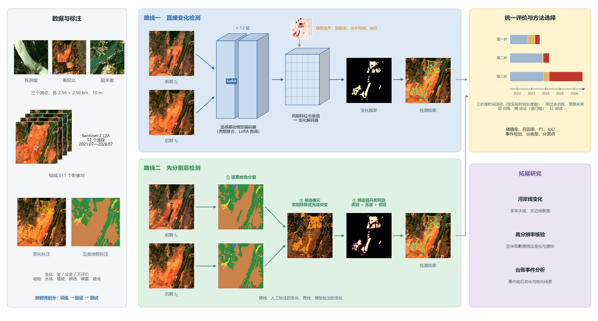
本研究分三步展开（图 1）：
- 准备数据：在三个测点上收集五年的 Sentinel-2 影像，把相邻两期组成影像对，人工标注两期之间的地表变化，并逐期标注地物类别；
- 研究两条检测路线：直接变化检测和先分割后检测，每条路线都比较多种方法，并逐项检验输入数据和设计选择是否有用；
- 比较和选择：两条路线用同样的影像对、同样的时间划分和同样的指标评价，最终选用先分割后检测作为主方法（第 6 章）。
在此基础上，开展河岸线变化、高分辨率影像核验和台账事件分析三项拓展研究。
2 总体思路
2.1 研究目标
铁路沿线的施工清表（清除地表植被和表土）、取土弃土、道路修建、林地砍伐和水域变化，都可能影响线路安全，需要及时发现、安排现场核查。Sentinel-2 卫星每 5 天经过同一地点一次，提供 12 个波段的多光谱地表反射率影像（其中蓝、绿、红、近红外 4 个波段为 10 米分辨率），适合对沿线做每周一次的变化筛查。
本研究的目标是：给定同一地点前后两期 Sentinel-2 影像，对每个像元（10 米 × 10 米的地面单元）判断两期之间是否发生了需要报告的地表变化，输出变化的位置和发生时段，供核查人员优先查看。
2.2 四个难点
（1）变化极其稀少。测试期内，发生变化的像元只占全部参与评价像元的 0.018%。设模型能找出的真实变化比例（召回率）为 $r$，没有变化的像元被错报为变化的比例（误判率）为 $f$，变化像元所占比例为 $\pi$，则模型报出的变化中真实变化所占的比例（精确率）为
$$P=\frac{r\pi}{r\pi+f(1-\pi)}$$
要在召回率 $r=0.6$ 时使精确率达到 $P=0.7$，误判率 $f$ 必须低于 0.0047%，也就是每一万个没有变化的像元，最多只能错报约 0.5 个。这个要求远高于一般的分类任务，所以本研究的方法首先要控制误报。
（2）“伪变化”来源多。雾和薄云、农田耕种收割、林草的季节性生长和枯黄、水位涨落和水色变化、冬季陡坡阴影、两期影像之间的几何错位，都会让两期影像看起来不同，但它们都不是需要报告的地表变化。模型必须分清“地表变了”和“观测条件变了”。
（3）目标尺度小。在 10 米像元下，施工便道、清表区边缘和林地中的小片砍伐往往只有 1—3 个像元宽。
（4）必须用过去预测未来。实际使用时，模型只能用已有的历史影像训练，再去检测以后新获取的影像。因此评价时必须按时间先后划分训练数据和测试数据，不能随机打乱。
2.3 两条技术路线
两条路线代表变化检测的两种基本思路。
- 直接变化检测：把前后两期影像一起输入一个深度网络，网络直接输出每个像元的变化概率。它不需要先识别地物，可以直接学习两期之间的差别；难点是训练样本有限时，网络容易把季节、雾等观测条件造成的差别也当成变化。本研究以遥感基础模型 OlmoEarth（一个已在大量卫星影像上预先训练好的大型网络）为主体，并与传统方法、机器学习、卷积网络、Transformer 和其他基础模型共 22 种方法比较。
- 先分割后检测：先把每一期影像中的每个像元分成五类地物（这一步称为“分割”），再比较两期的地物类别和光谱。它明确地利用了“地物是什么”这一信息，结果容易解释；难点是每一期的分割都有误差，两期直接比较时误差会叠加，产生大量虚假变化。本研究比较了 23 种分割模型，并设计了两步判别：先用宽松的规则选出可能发生变化的像元（称为“候选像元”），再用一个分类器（称为“判别器”）逐个判断这些候选是不是真实变化。
2.4 变化的定义
两套人工标注。变化标注对每个影像对逐像元标出两期之间是否发生了需要报告的变化；地物标注对每一期影像逐像元标出它属于水体、植被、耕地、裸露、建成中的哪一类。被云遮挡、缺测或判读员无法确定的像元记为“不评价”，既不参与训练，也不参与评价。
检测目标：类别转移变化。本研究把两期之间地物类别发生改变的变化作为检测目标，下文称为“类别转移变化”：一个像元在变化标注中被标为变化，并且它在前后两期的地物标注中类别不同，才算作变化。例如林地被清表成裸土（植被→裸露）、在裸土上修路建房（裸露→建成）、河道水面扩张（裸露或植被→水体）。按这一规则统计和评价，下文简称“类别转移口径”。
为什么这样定义。两套标注是在同一批影像上完成的。如果一个像元在地物标注中前后都是同一类，却在变化标注中被标为变化，两套标注在这个像元上就互相矛盾。只统计类别转移变化，可以让两套标注逻辑一致，也让两条路线在同一个定义清楚的目标上比较。
类内变化。地物类别没有改变的变化，例如林地局部疏伐后仍是林地、裸土表面颜色改变，下文称为“类内变化”。评价时它们记为不评价，不计入主要指标；4.4.4 节和 5.6.4 节单独统计两条路线对类内变化的检出率。
全部影像对共有 19,768 个标注为变化的像元，其中类别转移变化 6,856 个，约占 35%；测试期内类别转移变化 1,955 个（各测试期的数量见表 4）。
2.5 评价原则
- 按时间划分数据。把全部影像对按时间顺序做三次划分，称为三“折”。每一折都用较早的影像训练、稍后的影像验证、更晚的影像测试（表 6），模拟“用过去的数据检测未来”的实际使用方式。
- 验证集和测试集的分工。把变化概率转换为“变 / 没变”的分界值（下文称“门槛”）、训练在第几轮停止、训练标签用哪一种，都只依据验证集决定。不同模型和两条路线之间的取舍，参考了测试期成绩，因此被选中方法的测试成绩会略偏乐观；最终结论还要在以后新标注的独立测试数据上确认（8.5 节）。
- 训练标签。训练标签有两种：“全部变化标注”把变化标注中的全部变化都当作变化来训练；“类别转移标签”只把类别转移变化当作变化，类内变化在训练时记为不评价。各方法的横向比较（4.4.2 节、5.6.1 节）都用全部变化标注训练；两条路线的最终方法另用类别转移标签训练，两种标签选哪一种由验证集决定（4.4.3 节、5.6.3 节）。所有成绩都按类别转移口径评价。
- 重复训练。深度网络和判别器每次训练的结果有随机波动。两条路线的最终方法都训练三次（使用三个不同的随机种子）取平均；对照实验的训练次数在表中注明。
- 指标。精确率（报出的变化中真实变化所占比例）、召回率（真实变化中被报出的比例）、F1（精确率和召回率的调和平均，是综合指标）、变化类交并比 IoU；分割另报 mIoU（五类交并比的平均）和总体精度。另外按事件（成片的变化）、变化类型、测点和成像条件分别统计。主要指标为三折平均 F1，定义见 4.4.1 节。
- 差异检验。比较两个方法时，在每一折内以测试影像对为单位有放回地重复抽样 2,000 次，每次计算两个方法的 F1 之差，得到差值的 95% 区间。区间不包含 0，称为差异显著（表中标 *）；区间包含 0，称为差异不显著，即现有测试数据还不足以区分两者。
3 已完成的工作
表 1 已完成的工作
| 工作 | 内容 | 规模与结果 |
|---|---|---|
| 影像与数据构建 | 下载三个测点的 Sentinel-2 地表反射率影像；生成云和缺测掩膜；前后两期影像精确对齐；12 个波段统一到 10 米网格 | 480 期影像，组成 511 个影像对；两期对齐后的残余错位中位数为 0.05 个像元 |
| 变化标注 | AI 先自动标出变化区域，判读员逐片看图复核，并标记变化类型 | 全部影像对逐像元标注；类别转移变化 6,856 个像元 |
| 地物标注 | 水体、植被、耕地、裸露、建成五类；AI 预标后多轮逐像元人工核查，并检查同一位置前后各期类别是否合理 | 480 期中的 424 期 |
| 辅助数据 | 光谱指数差、往年同期、地形、Sentinel-1 雷达、逐期光照与阴影、成像质量 | 6 类；每类都做了时间对齐、空间对齐和质量控制 |
| 直接变化检测 | 传统方法、机器学习、卷积网络、Transformer 与状态空间模型、遥感基础模型五类方法比较；对 OlmoEarth 做“每次只改一个因素”的对照实验（消融实验） | 22 种方法；25 组对照；最终方案三折平均 F1 0.674 |
| 先分割后检测 | 23 种分割模型比较；候选像元与判别器的设计；判别器选型与特征对照 | 32 组对照；最终方案三折平均 F1 0.761，作为本研究的主方法 |
| 河岸线研究 | 多年水域范围统计、水边线提取、铁路一侧的河岸断面量测 | 株洲南 31 个、韶关南 26 个断面 |
| 高分辨率核验准备 | 吉林一号存档影像选片与计价 | 93 景，覆盖 60 个“测点 × 季度”中的 53 个 |
| 台账事件分析 | 台账是铁路部门记录沿线隐患和施工事件的清单；（只在内部版）判断事件在 10 米影像上是否可见 | （只在内部版） |
4 直接变化检测
4.1 变化检测方法的发展
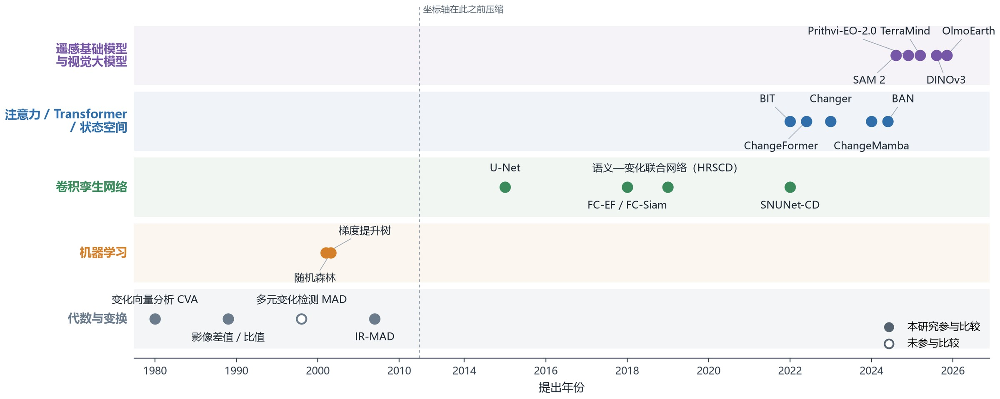
遥感变化检测方法大体经历了五个阶段（图 2）。
代数与变换方法。最早的方法直接比较两期影像的数值，例如两期相减（差值法）或相除（比值法）。变化向量分析（Change Vector Analysis，CVA）[1,2] 把每个像元两期各波段的差值看成一个向量，用向量的长度表示变化强度。多元变化检测（MAD）及其迭代改进形式 IR-MAD [3] 用统计方法找出两期之间最不相关的波段组合，以突出变化。这类方法不需要人工标注，但季节、大气和光照的差别同样会产生很大的差值，用一个门槛很难同时做到多找出变化、少误报。
机器学习方法。先把两期的光谱、指数和周围像元的统计量整理成一组数字（称为特征），再用随机森林、支持向量机、梯度提升树等分类器，从人工标注中学习“变化 / 没变”的区分规则。它能利用标注，但效果很依赖特征怎么设计。
卷积孪生网络。Daudt 等 [4] 提出用卷积网络做变化检测：FC-EF 把两期影像叠在一起输入一个网络；FC-Siam-diff 和 FC-Siam-conc 用同一个网络（称为“孪生”，即两份共享参数的网络）分别处理两期影像，再比较两期的特征。之后的 SNUNet-CD [5] 加入更密集的连接和注意力模块，改善了细小目标的检测。
注意力、Transformer 与状态空间模型。这类方法能建模影像中相隔较远位置之间的关系。BIT [6] 先把两期影像压缩成少量“概括性向量”，再比较它们的关系；ChangeFormer [7] 用分层的 Transformer 提取不同尺度的两期特征；Changer [8] 在两期特征之间互相交换信息；ChangeMamba [9] 用状态空间模型，以较小的计算量建模大范围的时空关系。
遥感基础模型。近两年出现了一类“基础模型”：先在数百万景、多传感器、多时相的卫星影像上做无需标注的预训练，学到通用的地表特征，再用少量标注数据适配到具体任务上，代表有 Prithvi-EO-2.0 [10]、TerraMind [11]、OlmoEarth [12]。DINOv3 [13]、SAM 2 [14] 等通用视觉大模型也被用于遥感变化检测 [15]。基础模型对本研究很重要：本研究只有三个测点、数百个影像对，从头训练的网络很难学到稳定的地表特征，而预训练模型已经“见过”大量不同地区、不同季节的多光谱影像。
需要说明的是，主流的深度学习变化检测数据集（如 LEVIR-CD、WHU-CD）都是亚米级的航空或卫星影像；基于 10 米 Sentinel-2 影像的公开数据集只有 OSCD [16] 等少数几个，规模都很小。Corley 等 [17] 的系统复现还发现，在同样的训练条件下，许多新网络并不比简单的 U-Net 明显更好。因此，本研究不依赖公开数据集上的排名，而是在每一类方法中选取代表，在本项目的数据和时间划分上统一比较。
4.2 参与比较的方法
表 2列出参与比较的全部方法。除不需要训练的传统方法外，每种方法都用本项目的影像对和标注重新训练，并用同一个评分程序在同一时间划分上评价。表中“本项目输入”一列写明该方法实际读取的数据。
表 2 参与比较的直接变化检测方法
| 类别 | 方法 | 出处 | 本项目输入 | 原理 |
|---|---|---|---|---|
| 传统方法 | 变化向量分析（CVA） | Malila 1980 [1] | 两期 6 波段（B2、B3、B4、B8、B11、B12） | 把两期各波段的差值看成一个向量，向量越长越可能是变化 |
| 传统方法 | 迭代重加权多元变化检测（IR-MAD） | Nielsen 2007 [3] | 两期 6 波段（B2、B3、B4、B8、B11、B12） | 用统计方法找出两期之间最不相关的波段组合，反复迭代以突出变化 |
| 传统方法 | 红光反射率绝对差 | 影像差值法 [2] | 两期红光 B4 | 后期红光减前期红光，取绝对值 |
| 传统方法 | 红光反射率增亮差 | 影像差值法 [2] | 两期红光 B4 | 只取红光变亮的部分，针对裸土出现时变亮 |
| 传统方法 | 植被指数绝对差 | Tucker 1979 [23] | 两期 B8、B4 | 后期植被指数减前期植被指数，取绝对值 |
| 机器学习 | 光谱特征 + 梯度提升树 | Friedman 2001 [37] | 两期 6 波段（B2、B3、B4、B8、B11、B12）及指数、邻域统计；往年同期、地形、离铁路距离 | 把每个像元的光谱、指数和邻域统计整理成特征，由梯度提升树判断是否变化（与 5.4.4 节的判别器相同，但不使用地物分割） |
| 卷积网络 | FC-EF | Daudt 等 2018 [4] | 两期 6 波段（B2、B3、B4、B8、B11、B12） + 46 层辅助 | 把两期影像叠在一起，输入一个卷积编码—解码网络 |
| 卷积网络 | FC-Siam-diff | Daudt 等 2018 [4] | 两期 6 波段（B2、B3、B4、B8、B11、B12） + 46 层辅助 | 两期影像由同一个网络分别提取特征，再把两期特征之差传给解码器 |
| 卷积网络 | FC-Siam-conc | Daudt 等 2018 [4] | 两期 6 波段（B2、B3、B4、B8、B11、B12） + 46 层辅助 | 两期影像由同一个网络分别提取特征，再把两期特征并列传给解码器 |
| 卷积网络 | U-Net 早融合（ResNet-34） | Ronneberger 等 2015 [39] | 两期 6 波段（B2、B3、B4、B8、B11、B12） + 46 层辅助 | U 形编码—解码网络，编码器为在 ImageNet 上预训练的 ResNet-34；两期影像与辅助数据叠在一起输入 |
| 卷积网络 | SNUNet-CD | Fang 等 2022 [5] | 两期 6 波段（B2、B3、B4、B8、B11、B12） + 46 层辅助 | 两期共用一个网络，编码器与解码器之间有密集的多层连接，并加入通道注意力 |
| Transformer / 状态空间 | BIT | Chen 等 2022 [6] | 两期 6 波段（B2、B3、B4、B8、B11、B12） + 46 层辅助 | 把两期特征压缩成少量概括性的向量，再用 Transformer 比较两期 |
| Transformer / 状态空间 | ChangeFormer | Bandara 与 Patel 2022 [7] | 两期 6 波段（B2、B3、B4、B8、B11、B12） + 46 层辅助 | 两期共用一个分层 Transformer 编码器，在多个尺度上比较两期特征 |
| Transformer / 状态空间 | Changer | Fang 等 2023 [8] | 两期 6 波段（B2、B3、B4、B8、B11、B12） + 46 层辅助 | 在网络中途交换两期的部分特征，让两期信息充分交互 |
| Transformer / 状态空间 | ChangeMamba | Chen 等 2024 [9] | 两期 6 波段（B2、B3、B4、B8、B11、B12） + 46 层辅助 | 用状态空间模型提取特征，并按时间和空间顺序扫描两期特征 |
| Transformer / 状态空间 | BAN | Li 等 2024 [40] | 两期 RGB | 借用一个不再训练的通用视觉大模型提取特征，再接一个专用的变化检测网络 |
| Transformer / 状态空间 | 语义—变化联合网络（SwinV2-Tiny） | Swin V2 [41]；联合训练思路 [32] | 两期 6 波段（B2、B3、B4、B8、B11、B12）；两期五类地物标注作辅助监督 | 一个网络同时输出两期地物类别和变化，用两期地物的一致性约束变化判断 |
| 遥感基础模型 / 视觉大模型 | OlmoEarth + LoRA（直接检测主方案） | OlmoEarth 2025 [12] | 两期 12 波段 + 18 层辅助 | 4.3 节 |
| 遥感基础模型 / 视觉大模型 | TerraMind + LoRA | Jakubik 等 2025 [11] | 两期 12 波段 | 多源遥感数据预训练的基础模型，两期特征之差接一个分割解码器 |
| 遥感基础模型 / 视觉大模型 | Prithvi-EO-2.0-300M 孪生 | Szwarcman 等 2024 [10] | 两期 HLS 6 波段（B2、B3、B4、B8A、B11、B12） | 在多时相卫星影像上预训练的 Transformer，两期分别提取特征后比较差值 |
| 遥感基础模型 / 视觉大模型 | DINOv3 + LoRA（PeftCD） | Siméoni 等 2025 [13]；PeftCD [15] | 两期 RGB | 在卫星影像上预训练的大型视觉模型，用 LoRA 适配，接变化解码器 |
| 遥感基础模型 / 视觉大模型 | SAM 2 + LoRA（PeftCD） | Ravi 等 2024 [14]；PeftCD [15] | 两期 RGB | 通用图像分割大模型，用 LoRA 适配，接变化解码器 |
注：46 层辅助数据为 6 层光谱指数差、7 层往年同期、5 层地形、6 层雷达（取离光学日期最近的景）、7 层多年地表统计和 15 层成像质量（两期的厚云、薄云、云影、缺测图，以及跨轨、两期是否有雾、两期水面反光、间隔天数、配准平移量），含义见【表号：辅助数据】；它们作为额外的输入通道，与两期影像叠在一起输入网络。
4.3 直接检测采用的模型：OlmoEarth 变化检测网络
4.3.1 为什么选择 OlmoEarth
OlmoEarth 是美国艾伦人工智能研究所 2025 年发布的开源遥感基础模型 [12]。选择它有三个原因：
- 输入与本项目一致。它预训练时就使用 Sentinel-2 L2A 的全部 12 个波段（还包括 Sentinel-1 雷达、Landsat 等数据），本项目的影像可以原样输入，不需要删减波段或改变通道。
- 能直接处理多期影像。它的预训练数据就是同一地点的多期影像，网络内部有表示时间先后的编码。前后两期可以作为一个两期的时间序列一起输入，两期的信息在网络内部直接相互比较。
- 在本项目的深度学习方法中效果最好。在 4.4.2 节的比较中，它的成绩在所有深度学习方法中最高；即使不加辅助数据，也比其他遥感基础模型和视觉大模型高 0.10 以上。
4.3.2 网络总体结构
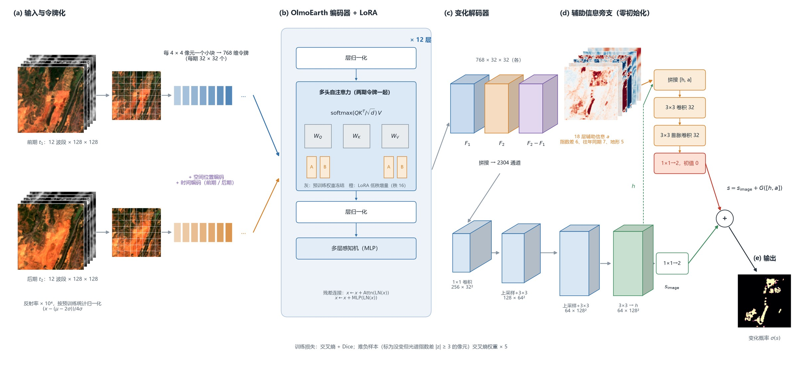
网络由四部分组成（图 3）：
- 编码器：OlmoEarth v1.2 Base，由 12 层 Transformer 组成，把影像转换成描述地表的特征；
- 低秩适配（LoRA）：编码器原有的预训练参数保持不变，只额外训练少量参数，让网络适应“发现变化”这一任务；
- 变化解码器：比较两期特征，并把结果放大回 10 米分辨率，得到每个像元的变化分数；
- 辅助信息旁支：把光谱指数差、往年同期和地形信息接入解码器末端，对变化分数做修正。
下面依次说明每一部分做什么、为什么这样做。
4.3.3 输入：反射率换算、归一化与“令牌”
每一期输入 12 个波段的地表反射率（地物反射的太阳光比例，取值 0—1）。首先把反射率乘以 10000，换回 Sentinel-2 产品原始的数值尺度；再按 OlmoEarth 官方提供的每个波段的均值 $\mu_b$ 和标准差 $\sigma_b$ 做归一化：
$$\tilde{x}_b=\frac{x_b-(\mu_b-2\sigma_b)}{4\sigma_b}$$
这样，输入数据的取值分布与模型预训练时完全相同。波段的排列顺序也按 OlmoEarth 的要求调整。
随后，影像按 4 × 4 像元切成小块，每一小块的 12 个波段共 192 个数值，经一次线性变换成为一个 768 维的向量，称为“令牌”。一块 128 × 128 像元的图块因此变成 32 × 32 个令牌，每个令牌代表 40 米 × 40 米的地面。每个令牌再加上两种编码：位置编码说明它在影像中的位置，时间编码说明它属于前期还是后期。主方案的时间编码只区分前期和后期（固定用相邻的两个月表示），不使用真实的拍摄日期；4.4.3 节比较了改用真实日期的效果。
4.3.4 编码器与低秩适配
注意力机制。Transformer 的核心是“注意力”：每个令牌通过三个线性变换得到查询向量 $Q$、键向量 $K$ 和值向量 $V$，计算
$$\mathrm{Attention}(Q,K,V)=\mathrm{softmax}\!\left(\frac{QK^{\mathsf T}}{\sqrt{d}}\right)V$$
其中 $QK^{\mathsf T}$ 衡量两个令牌之间的相关程度，softmax 把相关程度转换成合计为 1 的权重，每个令牌按这些权重汇集其他令牌的信息 $V$，$d$ 是向量的维数。前后两期的令牌一起参与计算，所以后期某处的令牌可以直接“看到”前期同一位置及周围的令牌，这正是判断变化需要的信息。12 层这样的计算依次叠加，令牌包含的信息从局部的光谱逐步扩展到更大范围的地物结构。
低秩适配（LoRA）。本项目只有数百个影像对，如果更新编码器全部约 1.15 亿个参数，很容易过拟合（只记住训练数据、对新数据效果差）。因此采用低秩适配方法 LoRA [18]：保持预训练参数 $W$ 不变，在每层注意力的查询和值两个变换上，各加一个由两个小矩阵相乘得到的增量：
$$W'=W+\frac{\alpha}{r}BA,\qquad A\in\mathbb{R}^{r\times d},\;B\in\mathbb{R}^{d\times r},\;r=16,\;\alpha=16$$
$A$ 把 768 维压缩到 16 维，$B$ 再映射回 768 维。$B$ 的初始值为零，所以训练开始时网络与预训练模型完全相同。这样，需要训练的编码器参数只有 59 万个，约为原来的 0.5%：既保留了预训练学到的地表特征，又能让注意力学会关注变化。4.4.3 节比较了“完全冻结编码器”“LoRA”“全部参数一起训练”三种方式。
4.3.5 变化解码器
编码器输出前期特征 $F_1$ 和后期特征 $F_2$（各 768 维）。解码器先把两期特征和它们的差值拼在一起：
$$H=[F_1,\;F_2,\;F_2-F_1]$$
共 2304 维。保留两期原特征，是为了让网络知道“原来是什么、后来是什么”；差值则直接表示“朝什么方向变了”。这种拼接方式与 ChangeViT [19] 等网络一致。之后依次：
- 用 1 × 1 卷积把 2304 维压缩到 256 维；
- 两次“放大 2 倍 + 3 × 3 卷积”，把空间尺寸恢复到原图，特征维数依次降为 128、64；
- 再用一层 3 × 3 卷积整理相邻像元之间的关系，得到每个像元的 64 维特征 $h$；
- 最后用 1 × 1 卷积输出“没变”和“变化”两个分数，二者之差就是变化分数 $s_{\text{image}}$；变化分数经 sigmoid 函数转换为 0—1 之间的变化概率。
4.3.6 多源数据的接入方式：零初始化辅助旁支
除两期影像外，网络还读取 18 层辅助数据 $a$：6 层光谱指数差、7 层往年同期信息、5 层地形（构建方法见 4.4.1 节）。它们不进入编码器，而是在解码器末端通过一个小的“旁支”网络接入（图 3d）：
$$s=s_{\text{image}}+G([h,\;a])$$
旁支 $G$ 把像元特征 $h$ 和辅助数据 $a$ 拼在一起，经过两层 32 维的 3 × 3 卷积（第二层采用间隔取样的膨胀卷积，以看到更大的邻域），最后用 1 × 1 卷积输出对变化分数的修正量。旁支最后一层的参数初始值全部设为零。
这样设计有两点考虑：
- 不破坏预训练特征。辅助数据不进入编码器，编码器的输入和预训练时完全一样；
- 从“只看影像”的网络出发。训练开始时旁支的输出恒为零，整个网络等同于只用影像的网络；只有当辅助数据确实能帮助减少训练误差时，旁支的参数才会离开零。也就是说，辅助数据只用来“修正”影像的判断，不会在一开始就干扰它。
4.4.3 节还比较了另外两种接入方式：在编码器输入端把辅助数据加到令牌上，以及用辅助数据逐级调整解码器特征（FiLM 方法）。
4.3.7 损失函数与难负样本
训练时最小化交叉熵损失和 Dice 损失之和：
$$L=L_{\text{CE}}+L_{\text{Dice}},\qquad L_{\text{Dice}}=1-\frac{2\sum_i p_iy_i+\epsilon}{\sum_i p_i+\sum_i y_i+\epsilon}$$
其中 $p_i$ 是像元 $i$ 的变化概率，$y_i$ 是标注（变化为 1，没变为 0），$\epsilon$ 是防止分母为零的小常数。交叉熵让每个像元的概率接近标注；Dice 损失衡量预测的变化区与标注的变化区重叠了多少，在变化像元极少时仍然有效 [20]。标注为“不评价”的像元不参与损失计算。
针对 2.2 节的难点（1）和（2），训练中加入难负样本：标注为没变、但两期的光谱指数差别很大的像元（按 4.4.1 节的标准化方法，差值的绝对值不小于 3）。这类像元正是雾、季节和水位造成的“伪变化”，最容易被误报。它们的交叉熵损失乘以 5 倍；切取训练图块时，没有对准变化像元的图块中，有一半会对准一个难负样本，让网络专门学习“光谱变了，但地表没变”的情形。
4.3.8 训练与推理设置
表 3 OlmoEarth 直接变化检测的训练与推理设置
| 项目 | 设置 |
|---|---|
| 训练图块 | 128 × 128 像元。含变化的影像对被抽到的概率是其他影像对的 3 倍；从含变化的影像对切图块时，一半保证包含一个随机选取的变化像元；其余图块中，一半保证包含一个难负样本（4.3.7 节），另一半随机切取 |
| 数据增强 | 随机水平 / 垂直翻转和 90° 旋转，前后两期同步变换 |
| 优化器 | AdamW；学习率 0.0003，前 3 轮逐步升高，之后按余弦曲线降到 1%；权重衰减 0.0001 |
| 批大小与轮数 | 每批 8 个图块，每轮 50 批；最多 80 轮、至少 20 轮；验证集 F1 连续 20 轮不提高即停止 |
| 其他 | 混合精度训练；梯度裁剪阈值 5 |
| 推理 | 对整幅 256 × 256 像元影像，以 128 × 128 的窗口、每次移动 64 像元滑动预测，重叠部分取平均 |
| 门槛 | 在验证集上搜索使 F1 最大的变化分数门槛，测试时固定使用 |
4.4 实验
4.4.1 数据与预处理
本节逐项说明进入模型的每一种数据是怎样获取和处理的。两条检测路线使用同一批影像对、同一套标注和同一个时间划分；辅助数据的制作方法也相同，只是接入模型的位置不同。
（1）Sentinel-2 影像
- 产品与范围：使用 Sentinel-2 L2A 级地表反射率产品（已做大气校正）。每个测点取 256 × 256 像元，即 2.56 km × 2.56 km，统一到 UTM 49N 投影（EPSG:32649）的 10 米网格上；时间范围为 2021 年 7 月至 2026 年 7 月。组成影像对的影像，株洲南、衡阳北、韶关南分别有 170、199、111 期。
- 波段：使用除卷云波段 B10 以外的全部 12 个波段。其中 10 米分辨率的有 B2（蓝）、B3（绿）、B4（红）、B8（近红外）；20 米的有 B5、B6、B7、B8A（红边）和 B11、B12（短波红外）；60 米的有 B1（气溶胶）和 B9（水汽）。20 米和 60 米的波段用双线性插值重采样到 10 米网格，以便逐像元对应。
- 辐射一致性：欧空局从 2022 年 1 月 25 日起更新了数据处理版本，此后的 L2A 数值整体多了 1000。本研究对此后的影像按“反射率 =（数值 − 1000）/ 10000”换算，对此前的影像按“反射率 = 数值 / 10000”换算，使前后的反射率可以直接比较。
- 云与缺测：每期影像附带云掩膜和缺测掩膜。云掩膜取 L2A 自带的场景分类结果中的云、云影、卷云和无数据四类。一个像元只要在前后任一期被云遮挡或缺测，就不参与训练和评价。配准后可见光波段反射率小于 −0.005 的异常像元同样不参与评价。
- 雾的识别：薄雾不会被场景分类识别为云，但会让可见光反射率整体升高。本研究为每个测点设定门槛，根据茂密植被区蓝光反射率的统计值，自动判断每一期影像是否有雾。这个结果用于成像条件分析和往年同期数据的质量控制。全部影像中约四分之一的期有雾。
（2）影像对的组成
同一测点云量较少、可以判读的影像按时间排序，相邻两期组成一个影像对，三个测点共 477 对；另有 34 对是判读时为个别变化区域另选了更合适的前期影像而补充的，合计 511 对。两期间隔的中位数为 7 天，338 对不超过 10 天，90% 不超过 32 天。有 241 对的前后两期来自不同的卫星轨道。
（3）前后两期的精确对齐（配准）
两期影像由卫星在不同时间拍摄，可能存在不到一个像元的整体错位。错位会让地物边缘在两期差值图上出现成对的“亮—暗”条纹，被误认为变化 [21,22]。本研究把前期影像对齐到后期影像：
- 分别用近红外 B8 和红光 B4，在陆地区域和含水面区域，用相位相关法估计整幅影像的平移量；
- 在“不移动”“按各单波段估计值移动”“按两者平均值移动”几个方案中，选移动后陆地区域残余错位最小的一个；
- 前期各波段按选定的平移量做三次样条插值移动；云和缺测掩膜同步移动；移出图外的部分记为缺测。后期影像和标注保持不动。
对齐前，整幅影像平移量的中位数为 0.24 个像元，90% 的影像对在 0.73 个像元以内，21 对超过 1 个像元。对齐后，把每对影像分成 64 × 64 像元的小块，逐块测量残余错位：各影像对残余错位中位数的中位值为 0.05 个像元，90% 的影像对不超过 0.07 个像元，99% 不超过 0.11 个像元（图 4，508 个可测量的影像对）。来自不同轨道的影像对与同一轨道的影像对残余错位相同。变化检测文献通常要求配准误差小于 0.2 个像元 [21,22]，本数据满足这一要求。
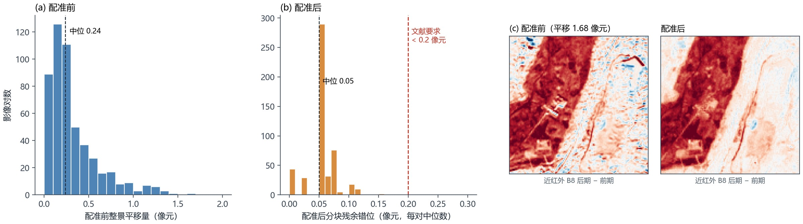
（4）变化标注
变化标注画在后期影像的网格上，每个像元取三种值之一：0 表示没有变化，1 表示变化，255 表示不评价（观察范围以外、被云遮挡或缺测、判读员无法确定）。标注流程是：先由光谱指数规则结合 AI 看图标出可能的变化区域（与本研究比较的检测模型无关），判读员再逐片看图复核、修改后保存，并给每个变化区域标记类型（新增裸露、植被减少、道路增加、建筑增加、水域增加、水域减少）。标注遵循三条规则：
- 只标需要报告的地表变化；农田正常的耕种收割、林草的季节变化、水色变化，以及雾、阳光反射造成的差异，都不标为变化；
- 同一处变化只在它第一次出现的那一对影像中标为变化，之后的影像对不再重复标；
- 判读员看不清、无法确认的区域，标为不评价。
按 2.4 节的定义，变化标注中的变化像元还要与地物标注对照：前后两期地物类别不同的计为变化，类别相同的属于类内变化，不参与主要指标。表 4列出了两种统计方式下的变化像元数。
表 4 变化像元数
| 范围 | 变化标注中的全部变化 | 其中前后地物类别不同（计入主指标） | 占比 |
|---|---|---|---|
| 全部影像对 | 19,768 | 6,856 | 34.7% |
| 测试期：2023 年 4—7 月 | 905 | 341 | 37.7% |
| 测试期：2023 年 11 月—2024 年 3 月 | 2,589 | 835 | 32.3% |
| 测试期：2024 年 4 月以后 | 3,678 | 779 | 21.2% |
（5）五类地物标注
先分割后检测需要每一期的地物类别。地物标注包括水体、植被、耕地、裸露、建成五类，共 424 期。制作流程是：AI 预标，判读员多轮逐像元核查，再检查同一位置前后各期的类别是否合理（例如建成区不会在两周内变回植被）。每一折只用该折训练期和验证期的地物标注训练分割模型。
（6）辅助数据
辅助数据用来回答两期影像本身难以回答的问题：这里的变化是不是季节性的？这里的地形会不会造成阴影？这一期是不是受到了雾的干扰？每一种辅助数据都遵循三条原则：
- 时间上不使用未来数据：只使用不晚于后期影像的观测（往年同期只用对应日期以前的历史影像；雷达是唯一的例外，见下文）；
- 空间上与影像对逐像元对齐；
- 缺失值明确标记，不与“没有异常”混为一谈。
图 5展示了一个影像对的全部辅助数据，表 5汇总了每类辅助数据的含义、制作方法和对齐方式。
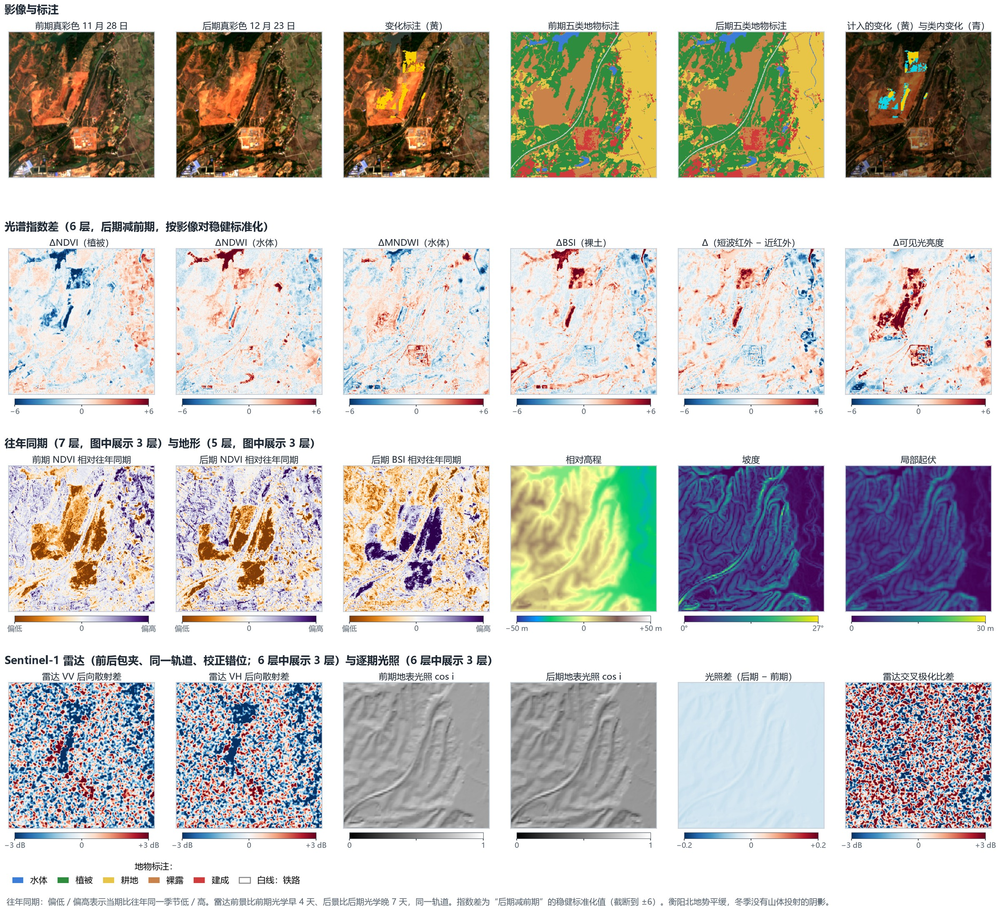
表 5 辅助数据的制作与对齐
| 类别 | 回答什么问题 | 制作方法 | 时间对齐 | 空间对齐与质量控制 |
|---|---|---|---|---|
| 光谱指数差（6 层） | 植被、水分、裸土、亮度朝哪个方向变了 | 两期分别计算植被指数 NDVI [23]、水体指数 NDWI [24] 和 MNDWI [25]、裸土指数 BSI [26]、短波红外与近红外之差、可见光亮度，再用后期减前期；为消除整幅影像的整体偏差，在两期都没有云的区域内做稳健标准化 $z=(d-\mathrm{中位数})/(1.4826\times\text{中位数绝对偏差})$，截断到 ±6 后除以 6 | 只用这一对影像 | 与影像对同一网格；云和缺测处记 0，且不参与评价 |
| 往年同期（7 层） | 当前状态与往年同一季节相比是否异常，用来区分正常的季节变化 | 对前期和后期分别建立“往年基线”：取至少早 300 天、一年中的日期相差不超过 30 天的无云影像，至少 3 期，逐像元求中位数和中位数绝对偏差（下限 0.02）；计算 NDVI、MNDWI、BSI 相对基线的偏离；第 7 层为后期可用的往年影像期数 / 10 | 只用对应日期以前的历史影像 | 质量控制版另外剔除有雾的期、要求至少 4 期、用百分位代替标准化值、缺失置为空（5.6.3 节比较两版） |
| 地形（5 层） | 地表处在什么地形位置，有没有陡坡 | 哥白尼 30 米数字高程模型 [27]，双线性重采样到 10 米网格；计算相对高程（与测点中位高程之差 / 50 米，截断到 ±1）、坡度 / 45°、坡向的正弦和余弦（乘以 min(坡度 / 10°, 1)，使平地的坡向为 0）、局部起伏 / 30 米 | 静态数据，测量于 2011—2015 年，早于全部影像；它反映施工前的地形 | 与测点网格对齐；原始分辨率 30 米 |
| Sentinel-1 雷达（6 层） | 不受云雾影响的地表后向散射变化 | 经过地形校正的后向散射（VV、VH 两种极化及二者之比），取前后两景的分贝差 / 3；前后两景与光学影像相差的天数 / 12；有效标记 | 前后包夹、同一轨道：前景日期不晚于前期光学影像，后景日期不早于后期光学影像，两景属于同一轨道，两端各不超过 12 天；不满足的影像对整对记为缺失 | 实测雷达与光学影像之间存在按轨道固定的整体错位（株洲南约 21—25 米、衡阳北约 21 米、韶关南约 50 米），已按轨道整体平移校正，校正后残余错位不超过 0.12 个像元 |
| 逐期光照与阴影（6 层） | 两期太阳高度不同造成的明暗和阴影差异 | 由成像时刻和测点经纬度计算太阳天顶角 $\theta_z$ 和方位角 $\phi_s$，结合坡度 $s$ 和坡向 $a$ 计算地表光照强度 $\cos i=\cos\theta_z\cos s+\sin\theta_z\sin s\cos(\phi_s-a)$，并沿太阳方向判断山体投射阴影；输出前后两期的光照强度及其差值、两期的阴影标记及其差值 | 与两期成像时刻一一对应 | 由数字高程模型计算，与测点网格对齐 |
| 成像质量（影像对级） | 这一对影像的观测条件是否可靠 | 两期是否有雾、水面反光强度、云量比例、是否跨轨道、两期间隔天数 | 与两期一一对应 | — |
| 多年地表统计（7 层） | 这里多年来通常是什么地表 | 用前期及以前的全部无云观测，逐像元统计水体出现频率、NDVI 的 10%、50%、90% 分位数、BSI 中位数、农田耕作年份的比例和观测期数 | 只用前期及以前的影像 | 与影像对同一网格 |
| 离铁路距离（1 层） | 像元离铁路线多远 | 到铁路中心线的距离，500 米以上记为 500 米，再除以 500 米 | 静态数据 | 与测点网格对齐 |
雷达的时间对齐。雷达和光学影像不是同时拍摄的，时间对不上会引入错误信息。以一个具体情形说明（图 6）：前期光学影像拍摄于 9 月 24 日，后期光学影像拍摄于 9 月 29 日；某处变化在 9 月 28 日出现，9 月 30 日已被处理恢复。后期光学影像拍到了这处变化。附近的雷达影像有 9 月 23 日（轨道 A）、9 月 27 日（轨道 B）和 10 月 5 日（轨道 A）三景。
如果对每期光学影像都“取日期最近的一景雷达”，后期配到 9 月 27 日，早于变化出现，雷达差值里没有这处变化；前期配到 9 月 23 日，前后两景来自不同轨道，入射角度不同，后向散射本身就不同，会产生虚假的差异；相邻两期光学影像还可能配到同一景雷达，差值恒为 0。按这种取法，本数据中 34% 的影像对前后配到同一景，17% 前后来自不同轨道，真正覆盖两期光学时段的同轨配对只有 149 对。
本研究采用“前后包夹、同一轨道”的规则：前景不晚于前期光学影像，后景不早于后期光学影像，两景属于同一轨道，两端各不超过 12 天。这样，在两期光学影像之间出现、并延续到后景日期的变化，一定会出现在雷达差值中，也不会因轨道不同产生虚假差异。但像上例这样在 10 月 5 日之前就已恢复的短暂变化，雷达仍然看不到。这是两种卫星拍摄时间不同造成的，任何配对规则都无法消除，所以本研究把雷达比光学时段多出的天数（上例中后端多 6 天）也作为输入，让模型知道这对雷达的时段比光学时段宽多少。在 12 天的窗口下，81% 的影像对有可用的雷达数据。这一规则的代价是：后景雷达可能比后期光学影像晚最多 12 天，使用雷达时，检测结果要等后景雷达获取以后才能给出。
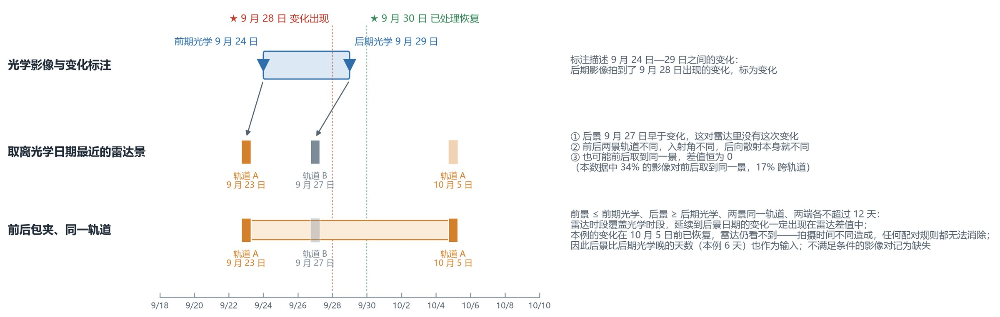
（7）时间划分
全部影像对按后期影像的日期排序，划分为三个折（表 6）。每一折中，训练集全部早于验证集，验证集全部早于测试集；跨越分界日期的影像对被剔除，前后共用同一期影像的影像对之间留出间隔，避免同一期影像同时出现在训练和测试中。三折的测试期依次为 2023 年 4—7 月、2023 年 11 月至 2024 年 3 月、2024 年 4 月以后，分别覆盖春夏、秋冬和之后两年多的长期情形。
表 6 按时间滚动的三折划分（影像对数 / 计入主指标的变化像元数）
| 折 | 训练期 | 验证期 | 测试期 | 训练 | 验证 | 测试 |
|---|---|---|---|---|---|---|
| 第一折 | 2022 年 10 月以前 | 2022 年 10 月—2023 年 3 月 | 2023 年 4—7 月 | 114 / 2,849 | 53 / 358 | 22 / 341 |
| 第二折 | 2023 年 10 月以前 | 2023 年 10 月 | 2023 年 11 月—2024 年 3 月 | 210 / 4,180 | 6 / 322 | 20 / 835 |
| 第三折 | 2023 年 11 月以前 | 2023 年 11 月—2024 年 3 月 | 2024 年 4 月以后 | 221 / 4,577 | 20 / 835 | 258 / 779 |
三折的测试规模差别很大（22、20 和 258 个影像对）。“三折平均 F1”让春夏、秋冬和长期三种情形的权重相同；“合并 F1”按像元数加权，主要反映第三折。第三折的验证期与第二折的测试期相同。2023 年 8—9 月的影像对只用于训练，没有进入任何一折的测试。
（8）评价指标
只在标注为 0 或 1 的像元上统计：正确报出的变化像元数 TP，误报的像元数 FP，漏报的像元数 FN。
$$P=\frac{TP}{TP+FP},\quad R=\frac{TP}{TP+FN},\quad F1=\frac{2PR}{P+R},\quad \mathrm{IoU}_{\text{变化}}=\frac{TP}{TP+FP+FN}$$
- 主要指标：三折平均 F1。每次训练在每一折上分别计算 F1，对三折取平均，再对多次训练取平均。同时报告“合并 F1”：把三折的 TP、FP、FN 分别相加后再计算 F1。第三折的变化像元最多，合并 F1 主要反映第三折的情况。
- 为什么变化检测不报总体精度和 mIoU。没有变化的像元占 99.9% 以上，任何方法的总体精度和“没变”类的 IoU 都高于 0.999，无法区分方法好坏 [28,29]，因此变化检测只报变化类的 IoU；分割则报五类的 mIoU 和总体精度。
- 事件指标。把标注中连在一起、不少于 4 个像元的变化区域算作一个“事件”，模型报出的变化覆盖该事件 30% 以上就算检出，由此得到事件检出率；模型报出的变化区域中，与任何标注变化都不重叠的区域所占比例，称为“误报斑块占比”。
- 分条件统计。按变化类型、测点、有雾与无雾的影像对、河岸带内外（距水陆分界 3 个像元以内为河岸带）分别统计，并统计误报落在哪类地物上。
- 差异检验。方法见 2.5 节。按类别转移口径，测试期只有约 2,000 个变化像元，消融实验中差值 95% 区间的半宽多在 0.02—0.06 之间，F1 相差 0.05 以下时通常不显著。
4.4.2 方法比较
表 7是每种方法一个代表配置的结果。所有方法都用全部变化标注训练，用同一时间划分、按类别转移口径评价，门槛都在验证集上选定；各方法实际读取的数据见表 2。卷积网络、Transformer 和其他基础模型使用各自论文的默认结构和训练设置，各训练一次；OlmoEarth 另外加了辅助旁支和难负样本（4.3 节），训练三次。
表 7 直接变化检测方法比较（每种方法一个代表配置；训练使用全部变化标注，按类别转移口径评价；三折平均，粗体为每类最好）
| 类别 | 方法 | 精确率 | 召回率 | F1 | 变化类 IoU | 合并 F1 | 事件检出率 | 训练次数 |
|---|---|---|---|---|---|---|---|---|
| 传统方法 | 变化向量分析（CVA） | 0.009 | 0.534 | 0.017 | 0.005 | 0.010 | — | 无需训练 |
| 传统方法 | 迭代重加权多元变化检测（IR-MAD） | 0.018 | 0.305 | 0.030 | 0.015 | 0.030 | — | 无需训练 |
| 传统方法 | 红光反射率绝对差 | 0.033 | 0.504 | 0.057 | 0.013 | 0.025 | — | 无需训练 |
| 传统方法 | 红光反射率增亮差 | 0.021 | 0.654 | 0.041 | 0.015 | 0.029 | — | 无需训练 |
| 传统方法 | 植被指数绝对差 | 0.158 | 0.712 | 0.237 | 0.078 | 0.145 | — | 无需训练 |
| 机器学习 | 光谱特征 + 梯度提升树 | 0.770 | 0.723 | 0.723 | 0.555 | 0.714 | 64.2% | 3 |
| 卷积网络 | FC-EF | 0.506 | 0.594 | 0.500 | 0.278 | 0.435 | 61.2% | 1 |
| 卷积网络 | FC-Siam-diff | 0.509 | 0.535 | 0.502 | 0.352 | 0.520 | 61.2% | 1 |
| 卷积网络 | FC-Siam-conc | 0.645 | 0.476 | 0.531 | 0.456 | 0.626 | 58.2% | 1 |
| 卷积网络 | U-Net 早融合（ResNet-34） | 0.612 | 0.711 | 0.619 | 0.469 | 0.638 | 58.2% | 1 |
| 卷积网络 | SNUNet-CD | 0.529 | 0.656 | 0.581 | 0.410 | 0.582 | 58.2% | 1 |
| Transformer / 状态空间 | BIT | 0.662 | 0.495 | 0.556 | 0.351 | 0.520 | 41.8% | 1 |
| Transformer / 状态空间 | ChangeFormer | 0.757 | 0.597 | 0.663 | 0.502 | 0.669 | 49.3% | 1 |
| Transformer / 状态空间 | Changer | 0.354 | 0.701 | 0.458 | 0.301 | 0.463 | 61.2% | 1 |
| Transformer / 状态空间 | ChangeMamba | 0.518 | 0.660 | 0.577 | 0.396 | 0.567 | 56.7% | 1 |
| Transformer / 状态空间 | BAN | 0.363 | 0.466 | 0.365 | 0.244 | 0.393 | 47.8% | 1 |
| Transformer / 状态空间 | 语义—变化联合网络（SwinV2-Tiny） | 0.457 | 0.581 | 0.459 | 0.265 | 0.419 | 49.3% | 1 |
| 遥感基础模型 / 视觉大模型 | OlmoEarth + LoRA（直接检测主方案） | 0.757 | 0.688 | 0.709 | 0.515 | 0.681 | 65.7% | 3 |
| 遥感基础模型 / 视觉大模型 | TerraMind + LoRA | 0.589 | 0.523 | 0.550 | 0.386 | 0.557 | 38.8% | 1 |
| 遥感基础模型 / 视觉大模型 | Prithvi-EO-2.0-300M 孪生 | 0.601 | 0.278 | 0.380 | 0.225 | 0.368 | 16.4% | 1 |
| 遥感基础模型 / 视觉大模型 | DINOv3 + LoRA（PeftCD） | 0.537 | 0.538 | 0.510 | 0.252 | 0.402 | 46.3% | 1 |
| 遥感基础模型 / 视觉大模型 | SAM 2 + LoRA（PeftCD） | 0.539 | 0.601 | 0.521 | 0.246 | 0.395 | 58.2% | 1 |
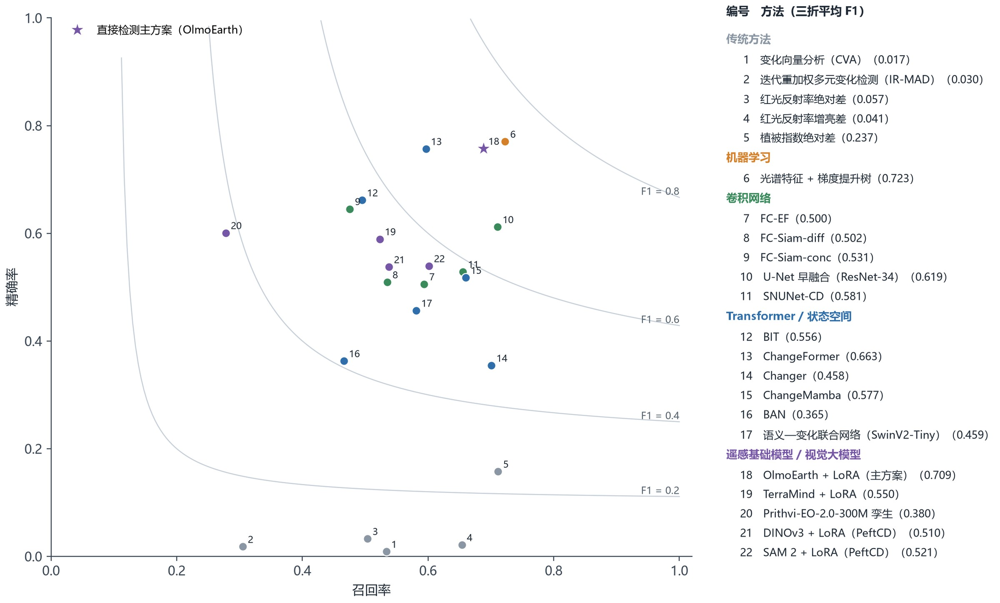
结果可以归纳为四点。
（1）传统方法不能直接使用。五种不需要训练的差值和变换方法，F1 都低于 0.24，精确率不到 0.16。原因正是 2.2 节所说的变化稀少：这些方法对每个像元只给出一个“差异有多大”的数值，雾、季节、水位造成的差异和真实变化混在一起，无论门槛定在哪里，误报都是真实变化的几十倍以上。其中植被指数差最好（F1 0.237），因为本研究的变化以植被被清除为主。
（2）机器学习方法很强。把两期的光谱、指数和周围像元的统计量整理成特征，用梯度提升树判别，F1 达到 0.723。可见在 10 米分辨率、样本少的条件下，设计好的光谱特征加上合适的分类器，本身就很有竞争力。这一做法也是第 5 章判别器的基础。
（3）卷积网络和 Transformer 网络效果中等。最好的是 ChangeFormer（0.663）和 U-Net 早融合（0.619），其余多在 0.45—0.58 之间。这些网络从头训练，或只在普通照片（ImageNet）上预训练过，需要从几百个影像对中学习卫星影像的特征。
（4）遥感基础模型之间差别很大，OlmoEarth 最好。OlmoEarth 的 F1 为 0.709，比 TerraMind 高 0.160，比基于 DINOv3、SAM 2 的方法高约 0.2，Prithvi 只有 0.380。除 OlmoEarth 外，这些预训练模型都没有超过 ChangeFormer 和 U-Net。可能的原因有两点：一是 DINOv3、SAM 2 只读取 RGB，Prithvi 只读取 6 个波段；二是 TerraMind、Prithvi、DINOv3、SAM 2 都对两期影像分别提取特征，只在解码器中比较，而 OlmoEarth 把两期影像作为一个时间序列一起输入编码器，两期在每一层注意力计算中直接比较（4.3.4 节）。OlmoEarth 不加辅助数据时 F1 为 0.654（表 8），与读取 46 层辅助数据的 ChangeFormer 相当；加上辅助旁支和难负样本后达到 0.709。
OlmoEarth 与“光谱特征 + 梯度提升树”的 F1 之差为 −0.014，差异不显著。直接变化检测路线采用 OlmoEarth，因为它是一个从输入到输出整体训练的网络，可以继续从输入、结构和训练方法上改进（4.4.3 节）；梯度提升树的思路则在第 5 章与地物分割结合使用。
4.4.3 输入方式的消融实验
消融实验是指每次只改变一个因素、其他条件不变，看成绩如何变化，以判断这个因素是否有用。本节以 OlmoEarth 网络为对象，回答四个问题：多光谱的各组波段是否有用；每一种辅助数据是否有用；辅助数据应该从网络的哪个位置接入；时间信息、微调方式和训练标签怎样选择。
一、辅助数据的接入方式
表 8比较了四种做法：不加辅助数据；在解码器末端用零初始化旁支接入（直接检测主方案的做法，4.3.6 节）；在编码器输入端把辅助数据加到令牌上，同时保留末端旁支；用辅助数据逐级调整解码器特征（FiLM 方法）。这一组实验在研究前期完成，模型用全部变化标注训练，按类别转移口径评价。
表 8 辅助信息的接入方式（全部变化标注训练，按类别转移口径评价）
| 接入方式 | 训练次数 | 精确率 | 召回率 | F1 | 同种子“不加辅助”F1 | 与不加辅助之差（95% 区间） |
|---|---|---|---|---|---|---|
| 不加辅助 | 3 | 0.750 | 0.614 | 0.654 | — | — |
| 解码器末端零初始化旁支（直接检测主方案） | 3 | 0.737 | 0.675 | 0.684 | 0.654 | +0.030（−0.020 至 +0.049） |
| 输入令牌相加 + 末端旁支 | 3 | 0.755 | 0.679 | 0.703 | 0.654 | +0.048（−0.039 至 +0.090） |
| 解码器多尺度调制（FiLM） | 2 | 0.784 | 0.670 | 0.709 | 0.653 | +0.056（+0.027 至 +0.119） * |
| 末端旁支，去掉往年同期 | 1 | 0.803 | 0.698 | 0.740 | 0.660 | +0.080（+0.037 至 +0.128） |
| 末端旁支，加雷达 | 1 | 0.700 | 0.684 | 0.646 | 0.660 | −0.014（−0.091 至 +0.028） |
注：各行只用与“不加辅助”共同的随机种子计算，差值 = 该行 F1 − 同种子“不加辅助”F1；* 表示区间不含 0。只训练一次的行不标 *。
三种接入方式都比不加辅助数据高 0.03—0.06，三者之间的差别不超过 0.025，小于同一配置换一个随机种子造成的波动；与“不加辅助”相比，只有 FiLM 方法的差异显著（它只训练了两次）。旁支去掉往年同期后，单次训练的成绩最高（0.740）；改用类别转移标签重新训练后，去掉往年同期同样比主方案好（表 9第三组）。由于三种接入方式效果相当，主方案采用结构最简单的解码器末端零初始化旁支：它不改变编码器的输入，可以原样沿用预训练参数。
二、光谱波段、辅助数据、时间信息、微调方式和训练标签
这一组实验都用类别转移标签训练和评价，结果见表 9和图 13b。实验分两批在两台计算机上完成。深度网络的训练结果与硬件有关：同一配置、同一随机种子在两台计算机上训练，F1 相差 0.037，与换一个随机种子的波动相当。为了不让这部分差别混入比较，表中分为三组，每组有自己的基线，组内的对照只和本组基线比较：第一组的基线为主方案（12 波段 + 18 层辅助数据），用来检验去掉全部辅助数据和改用全部变化标注训练；第二组的基线为“12 波段、不加辅助数据”，用来比较各组波段；第三组的基线也是主方案，用来比较各种辅助数据、时间信息、微调方式和令牌大小。
表 9 OlmoEarth 直接检测的输入与设置消融（类别转移标签训练与评价；对基线做配对检验）
| 对照 | 设置 | 训练次数 | 精确率 | 召回率 | F1 | 同种子基线 F1 | 与基线之差（95% 区间） |
|---|---|---|---|---|---|---|---|
| 第一组基线 | 主方案：12 波段 + 18 层辅助数据旁支，LoRA | 2 | 0.715 | 0.672 | 0.674 | — | （基线） |
| 训练标签 | 改用全部变化标注训练（评价口径不变） | 2 | 0.769 | 0.690 | 0.721 | 0.674 | +0.047（−0.034 至 +0.126） |
| 辅助数据 | 不加辅助数据（只用 12 波段） | 1 | 0.732 | 0.636 | 0.663 | 0.702 | −0.039（−0.089 至 +0.005） |
| 第二组基线 | 12 波段，不加辅助数据 | 3 | 0.700 | 0.652 | 0.665 | — | （基线） |
| 光谱波段 | 去掉 60 米大气波段 B1、B9 | 1 | 0.671 | 0.663 | 0.646 | 0.669 | −0.023（−0.047 至 +0.023） |
| 光谱波段 | 10 米 4 波段 + 红边 4 波段 | 1 | 0.679 | 0.625 | 0.603 | 0.669 | −0.065（−0.104 至 +0.012） |
| 光谱波段 | 10 米 4 波段 + 短波红外 2 波段 | 1 | 0.698 | 0.652 | 0.664 | 0.669 | −0.004（−0.036 至 +0.041） |
| 光谱波段 | 只用 10 米 4 波段（B2、B3、B4、B8） | 1 | 0.754 | 0.633 | 0.675 | 0.669 | +0.007（−0.073 至 +0.039） |
| 光谱波段 | 只用 RGB | 1 | 0.617 | 0.604 | 0.590 | 0.669 | −0.079（−0.161 至 −0.023） |
| 第三组基线 | 主方案：12 波段 + 18 层辅助数据旁支，LoRA | 2 | 0.642 | 0.685 | 0.638 | — | （基线） |
| 辅助数据 | 去掉往年同期（旁支只接指数差和地形） | 2 | 0.704 | 0.690 | 0.675 | 0.638 | +0.037（+0.007 至 +0.061） * |
| 辅助数据 | 加雷达（前后包夹、校正错位），接入旁支 | 1 | 0.769 | 0.686 | 0.694 | 0.665 | +0.028（−0.003 至 +0.094） |
| 辅助数据 | 地形换成另一个测点的地形 | 1 | 0.835 | 0.666 | 0.734 | 0.665 | +0.069（−0.009 至 +0.107） |
| 辅助数据 | 地形每个影像对随机平移 | 1 | 0.730 | 0.686 | 0.688 | 0.665 | +0.023（−0.030 至 +0.043） |
| 辅助数据 | 加逐期光照与阴影 | 1 | 0.758 | 0.669 | 0.692 | 0.665 | +0.026（−0.023 至 +0.045） |
| 时间信息 | 时间编码用真实成像日期 | 1 | 0.763 | 0.678 | 0.695 | 0.665 | +0.030（−0.026 至 +0.193） |
| 微调方式 | 冻结编码器（只训练解码器和旁支） | 1 | 0.716 | 0.681 | 0.691 | 0.665 | +0.026（−0.048 至 +0.054） |
| 令牌大小 | 每个令牌 8 × 8 像元（80 米） | 1 | 0.763 | 0.663 | 0.679 | 0.665 | +0.013（−0.045 至 +0.047） |
注：对照行的精确率、召回率、F1 和“同种子基线 F1”都只用对照与基线共同的随机种子计算，差值 = 对照 F1 − 同种子基线 F1；F1 为三折平均。95% 区间由各折内按测试影像对有放回重抽 2,000 次得到，只反映测试样本的抽样波动。* 表示区间不含 0，即差异显著。只训练一次的对照不标 *：同一配置换一个随机种子，F1 可相差 0.02—0.06，一次训练的区间反映不了这部分波动，需补足三次训练后再下结论。
由表 9可以得到四点结论。
（1）多光谱必要，近红外最重要；红边和大气波段作用很小。只用 RGB 三个波段时，F1 降到 0.590，与 12 个波段相比差 −0.079，只训练一次，有待重复确认，与先分割后检测的结论一致（5.6.3 节）。只用 10 米分辨率的 4 个波段（蓝、绿、红、近红外）时，F1 为 0.675，与 12 个波段相当（+0.007，差异不显著）；在这 4 个波段上加红边（−0.065，差异不显著）或加短波红外（−0.004，差异不显著），以及去掉 60 米的 B1 和 B9（−0.023，差异不显著），与 12 个波段的差异也都不显著（以上差值都相对于 12 波段基线）。也就是说，多光谱的作用主要来自近红外，这与近红外对植被最敏感、本研究的变化以植被被清除为主相符。由于 OlmoEarth 预训练时就使用全部 12 个波段，主方案保留 12 个波段输入，与预训练保持一致。
（2）往年同期对直接检测没有帮助，其他辅助数据的作用还不能确认。第一组中，不加辅助数据时 F1 为 0.663，与主方案相比 −0.039，差异不显著。第三组中，旁支去掉往年同期、只接指数差和地形后，F1 反而提高：+0.037，差异显著。全部变化标注训练时去掉往年同期也是如此（表 8），置换检验（下文第三部分）也表明模型对往年同期的依赖很小。因此，下一步将从主方案中去掉往年同期，在同一台计算机上训练三次后更新主方案（已在进行）。加入雷达（+0.028，差异不显著）或逐期光照（+0.026，差异不显著），以及把地形换成另一个测点的地形（+0.069，差异不显著）或随机平移（+0.023，差异不显著），目前都只训练了一次，差值在 +0.023 至 +0.069 之间，与换一个随机种子造成的波动相当（第一组主方案各次训练的 F1 最大相差 0.057），还不能判断这些数据是否有用。地形被换掉以后成绩没有下降，说明网络没有利用地形的物理含义。
（3）时间信息、微调方式和令牌大小。把时间编码换成真实的拍摄日期（+0.030，差异不显著），冻结编码器、只训练解码器和旁支（+0.026，差异不显著），以及令牌从 4 × 4 像元放大到 8 × 8 像元（+0.013，差异不显著），与主方案的差异都不显著，目前都只训练了一次。另外两项对照——把前期之前的 2 期影像也一起输入编码器（正在训练）、编码器全部参数一起训练（正在训练）——计算量较大，在其余对照之后进行。主方案沿用研究前期确定的 LoRA 和 4 × 4 像元令牌。
（4）训练标签按验证集选择。用类别转移标签训练时，验证集 F1 为 0.894，高于用全部变化标注训练的 0.856；测试集上则是用全部变化标注训练的略高（+0.047，差异不显著）。按“训练标签只依据验证集选择”的原则（2.5 节），直接检测最终采用类别转移标签训练。
三、模型是否真的用到了辅助数据：置换检验
置换检验是在测试时，把某一组辅助数据换成同一测点另一个影像对的对应数据（地形不随时间变化，改为整体平移 128 个像元），其余输入和门槛都不变，看成绩是否下降。如果模型依赖这组数据，换掉以后成绩应明显下降。这项检验在研究前期完成：模型为用全部变化标注训练的主方案（三次训练），按全部变化标注评价。
结果是：光谱指数差被换掉后，三折平均 F1 下降 0.070，差异显著，说明模型确实在使用指数差；往年同期被换掉后只下降 0.009，地形被换掉后的变化不显著。也就是说，模型主要依靠由两期影像本身计算的指数差，往年同期和地形虽然接入了网络，模型却几乎没有使用它们。指数差本身可以由 12 个波段算出，网络也可能自己学到，所以去掉全部辅助数据后，成绩只下降 0.03 左右（表 8第一、二行）。
4.4.4 详细结果
表 10给出 OlmoEarth 直接检测在各测试期、各变化类型、各测点和不同成像条件下的结果，图 8展示了它效果最好的几个影像对。
表 10 OlmoEarth 直接检测的详细结果（类别转移口径）
| 统计范围 | 精确率 | 召回率 | F1 | 说明 |
|---|---|---|---|---|
| 测试期 2023 年 4—7 月 | 0.955 | 0.639 | 0.764 | 2 次训练平均 |
| 测试期 2023 年 11 月—2024 年 3 月 | 0.585 | 0.832 | 0.685 | 2 次训练平均 |
| 测试期 2024 年 4 月以后 | 0.604 | 0.544 | 0.572 | 2 次训练平均 |
| 三折平均 | 0.715 | 0.672 | 0.674 | 变化类 IoU 0.486 |
| 三折像元合并 | 0.631 | 0.683 | 0.655 | |
| 事件（≥ 4 像元斑块） | — | 56.7% | — | 共 67 个事件；报出的斑块中 47.0% 不与任何标注变化重叠 |
| 类型：新增裸露 | — | 0.782 | — | 1,618 个变化像元 |
| 类型：水域减少 | — | 0.000 | — | 145 个变化像元 |
| 类型：水域增加 | — | 0.186 | — | 113 个变化像元 |
| 类型：植被减少 | — | 0.356 | — | 87 个变化像元 |
| 类型：道路增加 | — | 0.805 | — | 136 个变化像元 |
| 测点：株洲南 | 0.158 | 0.129 | 0.138 | |
| 测点：衡阳北 | 0.711 | 0.790 | 0.748 | |
| 测点：韶关南 | 0.361 | 0.366 | 0.361 | |
| 无雾影像对 | 0.704 | 0.683 | 0.692 | 1,472 个变化像元 |
| 有雾影像对 | 0.479 | 0.684 | 0.563 | 483 个变化像元 |
| 河岸带外 | 0.630 | 0.820 | 0.712 | 1,576 个变化像元 |
| 河岸带内 | 0.674 | 0.113 | 0.194 | 379 个变化像元 |
| 斑块大小 1—4 像元 | — | 0.149 | — | 占变化像元 10.3% |
| 斑块大小 5—20 像元 | — | 0.507 | — | 占变化像元 18.8% |
| 斑块大小 21—100 像元 | — | 0.677 | — | 占变化像元 37.8% |
| 斑块大小 > 100 像元 | — | 0.972 | — | 占变化像元 33.1% |
| 类内变化（不计入主指标） | — | 0.257 | — | 5,217 个像元 |
| 误报所在的后期地物 | — | — | — | 水体 30%；植被 8%；耕地 3%；裸露 54%；建成 1%；无地物标注 3% |
注：一个变化区域可以同时标有多个类型（例如植被被清除后成为裸土），因此各类型的像元数之和大于变化像元总数；“建筑增加”只有 2 个变化像元，未单独列出。“无地物标注”指后期影像没有地物标注的位置。
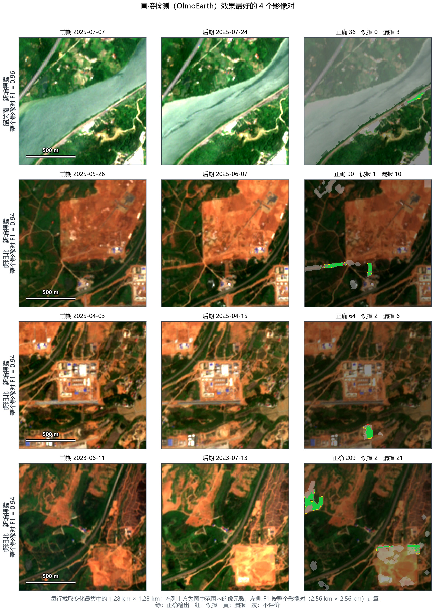
与先分割后检测相比：
- 它在植被减少（0.356 对 0.303）、水域增加（0.186 对 0.065）上的召回率高于先分割后检测（括号内依次为直接检测和先分割后检测）。这类变化没有明显的裸土光谱，先分割后检测的候选规则容易漏掉，而直接检测从两期的整体差异中学习，能找回一部分；
- 在新增裸露（0.782 对 0.856）、水域减少（0.000 对 0.083）上，召回率低于先分割后检测；
- 误报斑块占比为 47.0%（先分割后检测 31.4%）；在有雾的影像对上 F1 为 0.563，比无雾的影像对低 0.129（先分割后检测分别为 0.689 和 0.771）；
- 对 1—20 个像元的小片变化，召回率为 0.380（先分割后检测 0.417）；河岸带内的 F1 为 0.194（先分割后检测 0.341）。
5 先分割后检测
5.1 研究进展
先分割后检测把变化检测拆成两个问题：先回答“每一期是什么地物”，再回答“两期之间是否发生了需要报告的变化”。已有研究大体有三种做法。
分类后比较。分别对两期影像做地物分类，再逐像元比较两张分类图，类别不同就判为变化 [30,31]。它直观，能直接说明“从什么变成了什么”，但两期分类的误差会叠加：如果每一期的分类精度是 85%，两期都分对的比例只有约 72%，其余像元都可能出现虚假的类别变化。
比较类别概率，或分两步判别。不只看每一期最可能的类别，而是保留每一类的概率，用概率的变化来判断；也可以先用宽松的规则选出可能变化的区域，再用分类器在这些区域里判断真伪。这类做法能利用分割结果的“把握程度”，也能把分割以外的光谱信息结合进来。
语义变化检测网络。用一个网络同时输出两期的地物类别和变化区域，两项任务共用同一个特征提取部分，例如 HRSCD [32]、针对 SECOND 数据集的非对称孪生网络 [33] 和 Bi-SRNet [34]。它需要两期都有逐像元的地物标注，也需要较多的训练数据。
本研究的大部分影像（480 期中的 424 期）有逐像元的五类地物标注，三种做法都可以实现。我们比较了分类后比较（5.4.2 节）和语义变化检测网络（4.4.2 节），最终采用第二类做法中的两步判别：逐期分割 + 候选像元 + 梯度提升树判别。
5.2 参与比较的分割模型
分割模型决定了每一期地物概率的质量。我们从六类代表性方法中选取了 23 种分割模型（表 11）。每种模型都用同样的五类地物标注、同样的训练影像训练，再接同一套候选规则和同一个判别器，保证比较的只是分割模型本身。
表 11 参与比较的分割模型
| 类别 | 分割模型 | 出处 | 输入 | 特点 |
|---|---|---|---|---|
| 遥感专用分割 | D2LS（ConvNeXt-Base） | Zou 等 2025 [35] | RGB | 每类地物的参照随当前影像自动调整（5.4.1 节） |
| 遥感专用分割 | D2LS（12 波段第一层） | Zou 等 2025 [35] | 12 波段 | 同上，第一层改为直接读取 12 个波段 |
| 遥感专用分割 | SegMAN-S | Fu 等 2025 [42] | 12 波段 | 同时建模局部细节和大范围背景的分割网络 |
| 遥感基础模型 | TerraMind-Base + LoRA | Jakubik 等 2025 [11] | 12 波段 | 多源遥感数据预训练的基础模型，接分割解码器 |
| 遥感基础模型 | OlmoEarth-Base + LoRA | OlmoEarth 2025 [12] | 12 波段 | 本研究直接检测所用的基础模型，逐期分割 |
| 遥感基础模型 | DOFA-Base + LoRA | Xiong 等 2024 [43] | 12 波段 | 根据波段的波长自动适配不同的波段组合 |
| 遥感基础模型 | Prithvi-EO-2.0-300M + LoRA | Szwarcman 等 2024 [10] | HLS 6 波段 | 在多时相卫星影像上预训练的 Transformer，接分割解码器 |
| 遥感基础模型 | Prithvi-EO-2.0-600M + LoRA | Szwarcman 等 2024 [10] | HLS 6 波段 | 同上，模型规模加倍 |
| 遥感基础模型 | Satlas 预训练 ResNet-50 U-Net | Bastani 等 2023 [44] | 12 波段 | 用 Sentinel-2 影像预训练的卷积网络，U 形解码 |
| 遥感基础模型 | SSL4EO-S12 ResNet-50 U-Net | Wang 等 2023 [45] | 12 波段 | 用 Sentinel-1/2 影像自监督预训练的卷积网络，U 形解码 |
| 遥感基础模型 | SoftCon ResNet-50 U-Net | Wang 等 2024 [46] | 12 波段 | 用 Sentinel-2 影像和土地覆盖标签预训练的卷积网络，U 形解码 |
| 通用视觉大模型 | SAM 3 + LoRA | Meta 2025 [47] | RGB | 通用图像分割大模型，用 LoRA 适配 |
| 通用视觉大模型 | SAM 3.1 + LoRA | Meta 2025 [47] | RGB | 同上，3.1 版 |
| 通用视觉大模型 | SAM 3（编码器冻结） | Meta 2025 [47] | RGB | 大模型参数不训练，只训练输出部分 |
| Transformer 分割 | SegFormer-B2 | Xie 等 2021 [48] | 12 波段 | 分层 Transformer，结构轻巧 |
| Transformer 分割 | Swin V2-Tiny + UPerNet | Liu 等 2022 [41] | 12 波段 | 在局部窗口内做注意力的 Transformer，多尺度解码 |
| Transformer 分割 | Swin V2-Tiny + U-Net | Liu 等 2022 [41] | 12 波段 | 同上，U 形解码 |
| 卷积分割 | ResNet-34 U-Net | Ronneberger 等 2015 [39] | 12 波段 | 经典的 U 形编码—解码网络 |
| 卷积分割 | ResNet-34 U-Net++ | Zhou 等 2018 [49] | 12 波段 | U-Net 的改进版，编码器与解码器之间连接更密 |
| 卷积分割 | ConvNeXt-Tiny U-Net | Liu 等 2022 [36] | 12 波段 | 新一代卷积网络，U 形解码 |
| 时序分割 | 时序注意力分割（4 期） | 本研究对照 | 4 期 12 波段 | 同时读取 4 期影像，利用相邻期之间的一致性 |
| 时序分割 | 两期拼接融合分割 | 本研究对照 | 2 期 12 波段 | 同时读取相邻 2 期影像，把两期特征拼接后输出当期类别 |
| 时序分割 | 两期门控融合分割 | 本研究对照 | 2 期 12 波段 | 同时读取相邻 2 期影像，自动决定相邻期特征的使用比例 |
5.3 选定的方法：D2LS 分割 + 候选像元 + 梯度提升树判别
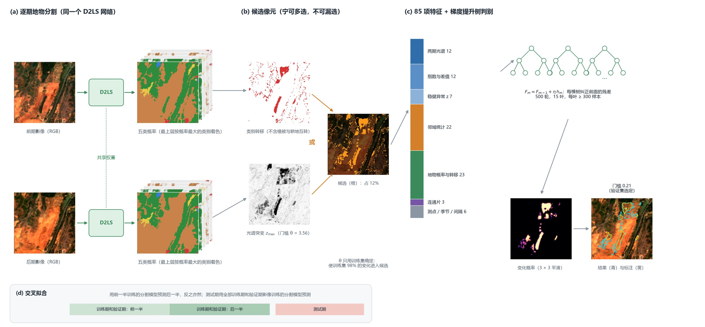
方法分三步（图 9）：
- 逐期地物分割：用 D2LS 分割网络对前后两期影像分别输出每个像元属于五类地物的概率；
- 选出候选像元：两期类别发生转移，或光谱发生明显突变的像元，进入候选；其余像元直接判为没有变化；
- 判别：对每个候选像元计算 85 项特征，由梯度提升树判断它是不是真实的地表变化。
下面先说明为什么不能在第 1 步之后直接比较两期类别，再依次说明每一步的做法和原理。
5.4 每一步怎么做、为什么这样做
5.4.1 逐期地物分割：D2LS
D2LS（动态字典分割网络）是 2025 年计算机视觉国际会议（ICCV）上发表的遥感语义分割方法 [35]。它的核心思想是：每一类地物的“参照样子”不是固定的，而是根据当前这幅影像自动调整。这正适合本研究——同一个测点的植被，在夏季和冬季、晴天和雾天看起来差别很大。
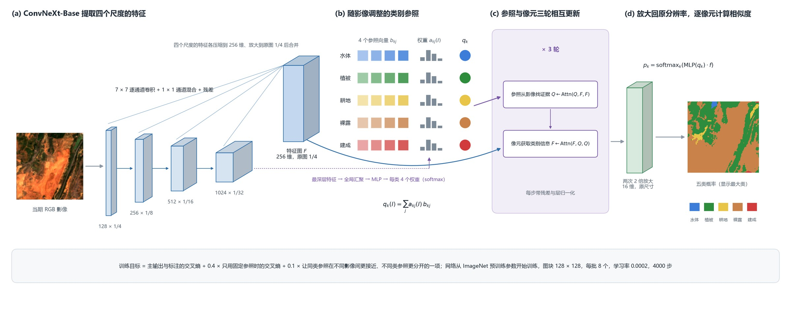
特征提取。D2LS 用 ConvNeXt-Base [36] 卷积网络提取特征。它分四个阶段，特征维数依次为 128、256、512、1024，对应原图 1/4、1/8、1/16、1/32 的尺寸：前面的阶段保留道路、田埂和水边线等细节，后面的阶段汇集更大范围的地物背景。D2LS 把四个阶段的特征统一到 256 维、放大到原图 1/4 的尺寸后合并，得到特征图 $F$。网络参数从 ImageNet 预训练结果开始训练。
随影像调整的类别参照（动态字典）。每类地物有 4 个可学习的参照向量 $b_{k1},\dots,b_{k4}$。网络读取当前影像最深层的特征，算出每类 4 个参照向量的权重（合计为 1），加权得到这幅影像中该类地物的参照：
$$q_k(I)=\sum_{j=1}^{4}a_{kj}(I)\,b_{kj},\qquad \sum_{j=1}^{4}a_{kj}(I)=1$$
参照与像元相互更新。五类参照 $Q$ 先在特征图中寻找属于本类的证据，像元特征 $F$ 再从更新后的参照中获取类别信息，如此三轮：
$$Q'=\mathrm{LN}[Q+\mathrm{Attn}(Q,F,F)],\qquad F'=\mathrm{LN}[F+\mathrm{Attn}(F,Q',Q')]$$
其中 Attn 是 4.3.4 节介绍的注意力计算，LN 是一种把数值调整到稳定范围的归一化操作。
输出五类概率。特征图经两次 2 倍放大恢复到原分辨率，与五类参照逐像元计算相似度，再经 softmax 转换为五类概率 $p_k$。后续判别使用完整的五类概率，而不只是概率最大的那一类：同样判为植被，概率 0.95 和 0.40 的像元含义很不一样。
训练。训练目标包括三部分：主输出与标注的交叉熵、只用固定参照时的输出与标注的交叉熵（权重 0.4），以及让同类参照在不同影像间更接近、不同类参照更分开的一项（权重 0.1）。输入为 RGB 三个波段；每批 8 个 128 × 128 像元的图块，学习率 0.0002，每次训练 4000 步。5.6.1 节比较了 RGB 输入与 12 波段输入。
交叉拟合。训练判别器时，需要训练期每一期影像的地物概率。如果用已经在这些影像上训练过的分割模型去预测它们，概率会“过于准确”，与测试时面对新影像的真实误差不一致，判别器就学不到如何应对分割错误。因此，把训练期和验证期的影像分成两半：用前一半训练的分割模型预测后一半，用后一半训练的模型预测前一半；判别器的训练和门槛的选择都使用这样得到的概率。测试期影像则用在全部训练期和验证期影像上训练的分割模型预测。这样，判别器在训练时看到的分割误差与测试时一致。
5.4.2 为什么不能直接比较两期类别
最直接的做法是：两期类别不同就判为变化。表 12第二、三行是这种做法在测试集上的结果。
表 12 从直接相减到候选与判别（三折测试期像元合并；类别转移口径）
| 做法 | 判为变化的像元 | 精确率 | 召回率 | F1 |
|---|---|---|---|---|
| 全部参评像元（若全部判为变化） | 10,763,184 | 0.018% | 1.000 | — |
| 两期类别不同即变化 | 709,748 | 0.21% | 0.764 | 0.004 |
| 同上，植被与耕地互转不算 | 534,695 | 0.28% | 0.762 | 0.006 |
| 候选像元全部当作变化（类别转移或光谱突变） | 1,329,656（占 12.4%） | 0.14% | 0.977 | 0.003 |
| 候选像元 + 梯度提升树判别（先分割后检测主方案） | — | 75.8% | 0.741 | 0.749 |
直接比较时精确率不到 1%：每报出 100 个变化像元，只有不到 1 个是真的。原因有三。
（1）变化太稀少。测试期约有 1076 万个没有变化的像元，变化像元只占 0.018%。直接比较时，没有变化的像元被错报为变化的比例实测为 6.6%；而按 2.2 节的公式，要达到 0.7 的精确率，这个比例必须低于 0.0047%，两者相差约 1,409 倍（图 11a）。每一期 85% 左右的分割精度，放到两期比较上远远不够。
（2）误报来自分割在类别分界处的来回摇摆。把误报按“前期类别 → 后期类别”统计（图 11b），结果几乎对称：植被→裸露和裸露→植被、植被→耕地和耕地→植被的数量都差不多。真实的地表变化是有方向的（施工是植被变成裸露，不会同时有同样多的裸露变回植被），对称的结果说明这些误报是两期分割在混合像元和类别分界处随机摇摆造成的。统计表明，97.9% 的误报像元位于两期地物类别的分界处。
（3）真假变化无法按位置分开。如果简单地去掉类别分界附近的像元，误报会大幅减少，但真实变化也几乎全被去掉：10 米分辨率下，真实变化也多是细小、零散的斑块，本身就位于类别分界处。所以必须引入类别以外的证据，判断“光谱是否确实变了、变化是否连成一片”。
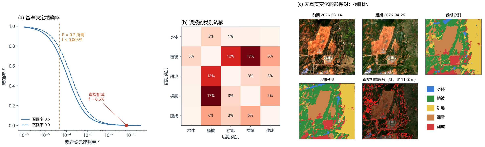
5.4.3 候选像元：宁可多选，不可漏选
候选这一步用简单规则保住几乎全部真实变化，同时把明显没有变化的像元直接排除，让判别器只需在候选中区分真伪。像元满足以下任一条件就进入候选：
- 类别转移：两期概率最大的类别不同。植被和耕地之间的互相转变不算，因为二者在 10 米分辨率下光谱相近，互相转变多由季节造成；
- 光谱突变：6 个光谱指数差（定义见表 5）经稳健标准化后，绝对值的最大值 $z_{\max}$ 不小于门槛 $\theta$。
门槛 $\theta$ 只用训练集确定：取能让训练集中 98% 的变化像元进入候选的值。表 12第四行显示了候选这一步的效果：它把需要判别的像元缩小到全部像元的 12.4%，同时保留了测试期 97.7% 的真实变化。
5.4.4 判别器：梯度提升树
判别器对每个候选像元计算 85 项特征（表 13），用来回答两个问题：地物类别是否变了；光谱是否确实变了、变化是否连成一片。
表 13 判别器的 85 项特征
| 特征组 | 数量 | 内容 | 作用 |
|---|---|---|---|
| 两期光谱 | 12 | 前后两期 B2、B3、B4、B8、B11、B12 反射率 | 保留可见光、近红外和短波红外的原始信息 |
| 指数及差值 | 12 | 两期 NDVI、MNDWI、BSI、可见光亮度，以及四者的后减前差值 | 描述植被、水分、裸土和亮度的状态与变化方向 |
| 稳健异常 | 7 | 6 个指数差的按对稳健标准化值及其最大值 $z_{\max}$ | 判断变化相对于本影像对大多数像元是否异常 |
| 初级邻域统计 | 5 | $z_{\max}$ 的 3 × 3、9 × 9 均值，NDVI、BSI 异常的 3 × 3 均值，NDVI 差的 3 × 3 标准差 | 区分孤立噪点与成片变化 |
| 多尺度邻域 | 17 | NDVI、BSI、亮度异常与 $z_{\max}$ 在 5、11、21 像元窗口内的均值（12 项），两期 NDVI 与亮度的 11 像元均值（4 项），后期亮度的 5 像元标准差 | 结合近处细节与较大范围背景 |
| 地物概率与转移 | 23 | 两期各五类的类别标记与概率（20 项）、两期概率向量的内积、类别转移标记及其 7 像元邻域内的转移比例 | 判断地物是否改变、往什么方向改变 |
| 候选连通片 | 3 | 所在候选连通片的面积（对数）、最大异常值、是否含类别转移 | 利用变化斑块的整体属性 |
| 测点与时间 | 6 | 测点编码、后期日序的正弦与余弦、两期间隔天数（对数） | 提供季节与观测间隔背景 |
梯度提升树的原理。梯度提升树 [37] 由许多棵小决策树依次组成。每一棵新树专门学习前面所有树还没有分对的部分，再按一个较小的比例（学习率）加到已有的结果上：
$$F_m(x)=F_{m-1}(x)+\eta\,h_m(x)$$
其中 $F_m$ 是加入第 $m$ 棵树后的结果，$h_m$ 是第 $m$ 棵树，$\eta$ 是学习率。本研究使用的“直方图”版本先把每个特征的取值分成最多 255 段，再在段与段的分界上寻找最佳的分裂点，训练速度快，并且可以直接处理缺失值。
选择梯度提升树而不是神经网络作判别器，有三点依据：85 项特征来源各异（反射率、指数、概率、面积的量纲都不同），属于“表格数据”；每一折的训练集只有 114—221 个影像对，变化像元很少；在这类中等规模的表格数据上，树模型通常比深度网络更好 [38]。5.6.3 节比较了 5 种分类器。
设置。最多 500 棵树，学习率 0.05；每棵树最多 15 个叶节点、每个叶节点至少包含 300 个样本，L2 正则系数 5；按变化和没变两类的样本数平衡权重；留出 10% 训练样本，成绩不再提高时提前停止。训练样本取训练集候选像元中的全部变化像元，以及每个影像对最多 8000 个没变的像元。树的规模小、约束强，是为了让判别器在不同年份之间更稳定。
后处理与门槛。候选以外的像元变化概率记为 0；候选内的概率与 3 × 3 邻域平均值各占一半，去除孤立的噪点；最后在验证集上选使 F1 最大的门槛。
5.5 数据
先分割后检测使用与第 4 章相同的影像对、配准方法、变化标注和时间划分（4.4.1 节），另外用到两类数据：
- 五类地物标注：用于训练分割模型。每一折只用该折训练期和验证期的地物标注，测试期的地物标注不参与任何训练；
- 辅助数据：判别器的主方案只使用由影像本身计算的 85 项特征；往年同期、地形、雷达、逐期光照和成像质量作为可选的附加特征，在 5.6.3 节逐项检验。它们的制作和对齐方法见表 5，在梯度提升树中缺失值直接记为空。
分割模型使用 RGB 或 12 个波段作为输入时，反射率的换算和重采样方法同 4.4.1 节。判别器的光谱特征取 B2、B3、B4、B8、B11、B12 六个波段，分别为蓝、绿、红、近红外和两个短波红外波段。
5.6 结果
5.6.1 分割精度
表 14列出 23 种分割模型在测试期 291 期影像上的分割精度，以及它们接同一个判别器后的变化检测成绩。
表 14 各分割模型的分割精度与检测成绩（按检测 F1 降序；分割精度为测试期 291 期；检测为同一套候选规则和判别器，判别器用全部变化标注训练、按类别转移口径评价，三个判别器种子平均；D2LS 为三个分割种子平均）
| 分割模型 | 输入 | 分割 mIoU | 总体精度 | 建成 IoU | 裸露 IoU | 检测精确率 | 检测召回率 | 检测 F1 | 合并 F1 |
|---|---|---|---|---|---|---|---|---|---|
| SAM 3 + LoRA | RGB | 0.532 | 76.4% | 0.360 | 0.494 | 0.877 | 0.668 | 0.743 | 0.741 |
| ConvNeXt-Tiny U-Net | 12 波段 | 0.714 | 86.1% | 0.536 | 0.633 | 0.819 | 0.702 | 0.743 | 0.738 |
| SegFormer-B2 | 12 波段 | 0.667 | 84.2% | 0.510 | 0.605 | 0.815 | 0.694 | 0.741 | 0.731 |
| Swin V2-Tiny + UPerNet | 12 波段 | 0.669 | 83.7% | 0.497 | 0.598 | 0.787 | 0.704 | 0.740 | 0.727 |
| 时序注意力分割（4 期） | 4 期 12 波段 | 0.698 | 85.0% | 0.556 | 0.615 | 0.845 | 0.651 | 0.731 | 0.726 |
| D2LS（ConvNeXt-Base） | RGB | 0.686 | 85.3% | 0.548 | 0.634 | 0.841 | 0.669 | 0.730 ± 0.017 | 0.732 |
| Satlas 预训练 ResNet-50 U-Net | 12 波段 | 0.711 | 85.7% | 0.536 | 0.627 | 0.781 | 0.705 | 0.729 | 0.725 |
| TerraMind-Base + LoRA | 12 波段 | 0.664 | 84.0% | 0.494 | 0.599 | 0.741 | 0.731 | 0.727 | 0.707 |
| 两期门控融合分割 | 2 期 12 波段 | 0.707 | 85.9% | 0.548 | 0.623 | 0.828 | 0.665 | 0.726 | 0.724 |
| 两期拼接融合分割 | 2 期 12 波段 | 0.706 | 85.9% | 0.558 | 0.623 | 0.795 | 0.672 | 0.714 | 0.707 |
| Prithvi-EO-2.0-600M + LoRA | HLS 6 波段 | 0.676 | 84.2% | 0.507 | 0.594 | 0.834 | 0.633 | 0.711 | 0.723 |
| Swin V2-Tiny + U-Net | 12 波段 | 0.738 | 87.2% | 0.559 | 0.644 | 0.850 | 0.644 | 0.710 | 0.711 |
| SSL4EO-S12 ResNet-50 U-Net | 12 波段 | 0.718 | 86.2% | 0.556 | 0.635 | 0.812 | 0.644 | 0.707 | 0.708 |
| SAM 3.1 + LoRA | RGB | 0.536 | 76.6% | 0.364 | 0.493 | 0.746 | 0.731 | 0.707 | 0.682 |
| SegMAN-S | 12 波段 | 0.648 | 82.8% | 0.452 | 0.576 | 0.813 | 0.677 | 0.704 | 0.705 |
| D2LS（12 波段第一层） | 12 波段 | 0.717 | 86.4% | 0.584 | 0.639 | 0.796 | 0.670 | 0.704 | 0.691 |
| OlmoEarth-Base + LoRA | 12 波段 | 0.703 | 85.4% | 0.548 | 0.620 | 0.796 | 0.650 | 0.701 | 0.705 |
| ResNet-34 U-Net | 12 波段 | 0.709 | 85.8% | 0.540 | 0.631 | 0.813 | 0.618 | 0.698 | 0.697 |
| SoftCon ResNet-50 U-Net | 12 波段 | 0.720 | 86.4% | 0.567 | 0.638 | 0.786 | 0.655 | 0.695 | 0.702 |
| Prithvi-EO-2.0-300M + LoRA | HLS 6 波段 | 0.668 | 83.8% | 0.497 | 0.598 | 0.804 | 0.630 | 0.691 | 0.704 |
| DOFA-Base + LoRA | 12 波段 | 0.646 | 82.9% | 0.458 | 0.593 | 0.682 | 0.724 | 0.688 | 0.660 |
| ResNet-34 U-Net++ | 12 波段 | 0.720 | 86.5% | 0.562 | 0.640 | 0.823 | 0.599 | 0.671 | 0.688 |
| SAM 3（编码器冻结） | RGB | 0.481 | 72.6% | 0.365 | 0.459 | 0.765 | 0.650 | 0.666 | 0.660 |
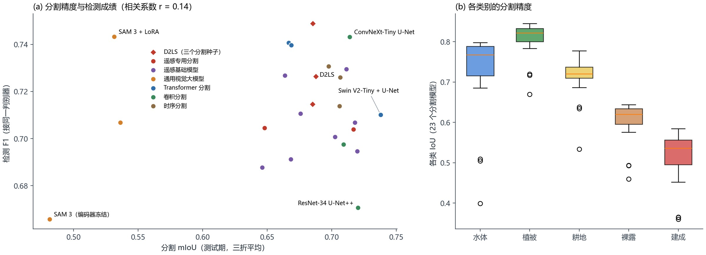
分割精度。23 种模型的三折平均 mIoU 在 0.481—0.738 之间，总体精度 72.6%—87.2%。从类别看（图 12b），植被最好（各模型 IoU 的中位数为 0.822），水体和耕地其次，裸露（0.620）和建成（0.536）最差。建成和裸露的光谱相近，又常与植被混在同一个 10 米像元里，是分割误差的主要来源。按模型看，U 形结构的分割网络精度最高，尤其是用 Sentinel-2 多光谱影像预训练的 SoftCon、SSL4EO、Satlas 和 Swin V2 U-Net；通用视觉大模型 SAM 3 只读取 RGB 三个波段，在 10 米影像上分割精度最低（0.48—0.54）。
分割更准，不等于检测更好。图 12a 中，分割精度与检测 F1 的相关系数只有 0.14。分割最准的 Swin V2 U-Net（mIoU 0.738）检测 F1 为 0.710；SAM 3 的分割 mIoU 只有 0.532，检测 F1 却达到 0.743。原因是判别器并不只依赖分割结果：真实变化中只有一部分表现为地物类别的改变，判别真伪的主要依据是光谱变化（5.6.3 节，去掉光谱特征后 F1 降到 0.488）；分割提供的是“前后各是什么地物”的背景信息，整体 mIoU 的高低并不直接决定这部分信息是否有用。
5.6.2 检测结果与分割模型的选择
按检测 F1 排序，前十种分割模型的 F1 在 0.714—0.743 之间，彼此相差不到 0.04。同一个 D2LS 换三个随机种子重新训练，F1 的标准差就有 0.017；验证集上各模型的 F1 在 0.843—0.913 之间，与测试成绩的相关系数只有 0.24，也无法稳定区分它们。因此，前十种分割模型之间的排名在现有数据上并不可靠；与判别器的设计相比（5.6.3 节），选哪种分割模型对检测成绩的影响较小。
本研究选择 D2LS 作为主分割模型，依据有两点：它的检测 F1 与第 1 名只差 0.013，小于 D2LS 自身换随机种子的标准差（0.017）；它只用 RGB 三个波段，多光谱信息全部交给判别器使用（5.6.3 节），两部分分工明确。改用类别转移标签训练判别器后，D2LS 方案的 F1 为 0.761（表 15）。
5.6.3 消融实验与对照
表 15以“D2LS（RGB）分割 + 85 项特征 + 梯度提升树、用类别转移标签训练”为基线，每次只改变一个因素；图 13a 把各项差值画在一起。
表 15 先分割后检测的消融与对照（类别转移标签训练与评价；对基线做配对检验）
| 对照 | 设置 | 训练次数 | 精确率 | 召回率 | F1 | 同种子基线 F1 | 与基线之差（95% 区间） |
|---|---|---|---|---|---|---|---|
| 基线 | D2LS（RGB）分割 + 85 项特征 + 梯度提升树，类别转移标签训练 | 3 | 0.805 | 0.750 | 0.761 | — | （基线） |
| 训练标签 | 改用全部变化标注训练（评价口径不变） | 3 | 0.880 | 0.669 | 0.736 | 0.761 | −0.024（−0.109 至 +0.059） |
| 判别器特征 | 去掉地物概率与转移特征（候选仍由分割给出） | 3 | 0.759 | 0.696 | 0.701 | 0.761 | −0.059（−0.116 至 +0.006） |
| 判别器特征 | 只用地物概率与转移特征（去掉全部光谱、指数和邻域） | 3 | 0.671 | 0.498 | 0.488 | 0.761 | −0.273（−0.443 至 −0.157） * |
| 判别器特征 | 去掉邻域统计 | 3 | 0.774 | 0.733 | 0.726 | 0.761 | −0.035（−0.071 至 −0.003） * |
| 判别器特征 | 去掉测点、季节与间隔 | 3 | 0.764 | 0.766 | 0.754 | 0.761 | −0.007（−0.039 至 +0.022） |
| 光谱波段 | 只用 RGB（候选与判别器都只用蓝、绿、红） | 3 | 0.706 | 0.691 | 0.676 | 0.761 | −0.085（−0.330 至 +0.042） |
| 光谱波段 | 去掉短波红外（B11、B12 及相关指数） | 3 | 0.729 | 0.752 | 0.730 | 0.761 | −0.030（−0.083 至 +0.013） |
| 光谱波段 | 去掉近红外（B8 及相关指数） | 3 | 0.683 | 0.594 | 0.605 | 0.761 | −0.156（−0.339 至 −0.073） * |
| 候选门槛 | 训练集候选召回 0.95 | 3 | 0.783 | 0.740 | 0.750 | 0.761 | −0.011（−0.110 至 +0.015） |
| 候选门槛 | 训练集候选召回 0.99 | 3 | 0.791 | 0.758 | 0.754 | 0.761 | −0.007（−0.035 至 +0.019） |
| 判别器 | 逻辑回归 | 3 | 0.670 | 0.677 | 0.659 | 0.761 | −0.102（−0.169 至 +0.013） |
| 判别器 | 两层神经网络（128、64） | 3 | 0.717 | 0.752 | 0.720 | 0.761 | −0.041（−0.166 至 +0.057） |
| 判别器 | 随机森林（300 棵） | 3 | 0.775 | 0.694 | 0.718 | 0.761 | −0.043（−0.083 至 +0.019） |
| 判别器 | 极端随机树（300 棵） | 3 | 0.835 | 0.679 | 0.725 | 0.761 | −0.036（−0.105 至 +0.010） |
| 分割模型 | D2LS（RGB）换一个分割随机种子 | 2 | 0.831 | 0.737 | 0.758 | 0.755 | +0.003（−0.017 至 +0.026） |
| 分割模型 | D2LS（12 波段第一层） | 2 | 0.783 | 0.756 | 0.750 | 0.755 | −0.005（−0.042 至 +0.077） |
| 分割模型 | Prithvi-EO-2.0-600M | 2 | 0.796 | 0.709 | 0.744 | 0.755 | −0.011（−0.247 至 +0.069） |
| 分割模型 | Prithvi-EO-2.0-300M | 3 | 0.779 | 0.717 | 0.729 | 0.761 | −0.032（−0.176 至 +0.039） |
| 辅助数据 | 加雷达：取离光学日期最近的景，未校正错位 | 3 | 0.818 | 0.754 | 0.770 | 0.761 | +0.010（+0.001 至 +0.022） * |
| 辅助数据 | 加雷达：前后包夹同轨，未校正错位 | 3 | 0.782 | 0.750 | 0.752 | 0.761 | −0.009（−0.040 至 +0.015） |
| 辅助数据 | 加雷达：前后包夹同轨，校正错位 | 3 | 0.790 | 0.746 | 0.756 | 0.761 | −0.005（−0.036 至 +0.016） |
| 辅助数据 | 加地形（真实） | 3 | 0.775 | 0.746 | 0.745 | 0.761 | −0.016（−0.038 至 −0.003） * |
| 辅助数据 | 加地形（换成另一个测点的地形） | 3 | 0.791 | 0.744 | 0.751 | 0.761 | −0.010（−0.027 至 +0.002） |
| 辅助数据 | 加地形（每个影像对随机平移） | 3 | 0.780 | 0.750 | 0.749 | 0.761 | −0.012（−0.033 至 +0.000） |
| 辅助数据 | 加逐期光照与阴影 | 3 | 0.808 | 0.743 | 0.757 | 0.761 | −0.004（−0.024 至 +0.005） |
| 辅助数据 | 加往年同期（标准化值，保留有雾的期，缺失记 0） | 3 | 0.765 | 0.758 | 0.747 | 0.761 | −0.014（−0.030 至 −0.001） * |
| 辅助数据 | 加往年同期（质量控制版，保留有雾的期） | 3 | 0.778 | 0.748 | 0.743 | 0.761 | −0.018（−0.043 至 +0.002） |
| 辅助数据 | 加往年同期（质量控制版，剔除有雾的期） | 3 | 0.767 | 0.753 | 0.741 | 0.761 | −0.020（−0.045 至 −0.001） * |
| 辅助数据 | 加影像对成像质量 | 3 | 0.802 | 0.746 | 0.763 | 0.761 | +0.002（−0.012 至 +0.018） |
| 辅助数据 | 加往年同期、多年地表统计、地形、离铁路距离（四组一起） | 3 | 0.761 | 0.746 | 0.739 | 0.761 | −0.021（−0.042 至 −0.009） * |
| 辅助数据 | 前后包夹并校正错位的雷达、光照、质量控制版往年同期、地形（一起加） | 3 | 0.777 | 0.736 | 0.738 | 0.761 | −0.022（−0.062 至 +0.002） |
| 时间上下文 | 加前期之前的 2 期历史影像证据 | 3 | 0.814 | 0.750 | 0.759 | 0.761 | −0.002（−0.019 至 +0.023） |
注：对照行的精确率、召回率、F1 和“同种子基线 F1”都只用对照与基线共同的随机种子计算，差值 = 对照 F1 − 同种子基线 F1；F1 为三折平均。95% 区间由各折内按测试影像对有放回重抽 2,000 次得到，只反映测试样本的抽样波动。* 表示区间不含 0，即差异显著。
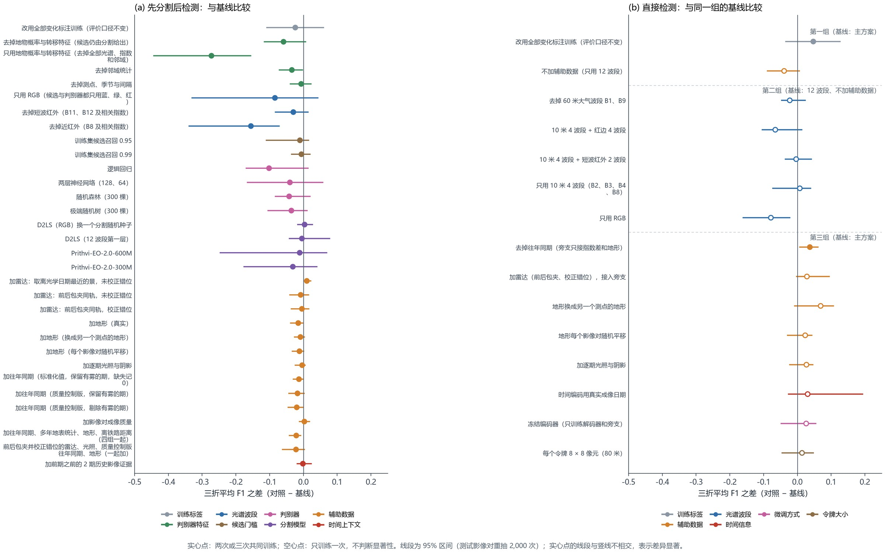
由表 15可以得到五点结论。
（1）判别真伪主要依靠光谱证据。只保留地物概率和类别转移特征、去掉全部光谱和指数特征时，F1 降到 0.488，差值 −0.273，差异显著。这相当于“用分类器学出来的分类后比较”：它比直接比较两期类别好得多，但远远不够。反过来，去掉地物特征、只保留光谱特征时，差值为 −0.059，差异不显著：分割提供的类别背景有帮助，但不起决定作用。周围像元的统计特征也有贡献（去掉后差值 −0.035，差异显著），说明“变化是否连成一片”是区分真伪的重要线索。去掉测点、季节和间隔天数特征几乎没有影响（−0.007，差异不显著），说明判别器并不依赖“这是哪个测点”这类信息。
（2）多光谱必要，关键在近红外。判别器只用 RGB 时 F1 为 0.676；去掉近红外波段 B8 及用到它的指数后，F1 降到 0.605，差值 −0.156，差异显著；去掉短波红外 B11、B12 的影响较小（−0.030，差异不显著）。近红外直接反映植被的有无，而本研究的变化以植被被清除、裸土出现为主。因此本方法的分工是：分割网络只用 RGB，多光谱信息集中在判别器中使用。
（3）梯度提升树作判别器。在完全相同的候选像元和特征下，逻辑回归、两层神经网络、随机森林和极端随机树的 F1 分别为 0.659、0.720、0.718、0.725，点估计都低于梯度提升树（0.761），但差异都不显著。梯度提升树成绩最高，对特征的量纲不敏感，还能直接处理缺失值，因此作为判别器。
（4）分割模型和候选门槛不是瓶颈。换一个分割随机种子（+0.003，差异不显著）、换成 12 波段输入的 D2LS（−0.005，差异不显著）或 Prithvi 分割模型（−0.011，差异不显著），差值都在 ±0.03 以内；把候选门槛从“覆盖训练集 98% 的变化”改为 95% 或 99%，差值也在 ±0.02 左右。
（5）辅助数据在这条路线上也没有带来可以确认的增益。逐项加入前后包夹并校正了错位的雷达（−0.005，差异不显著）、逐期光照与阴影（−0.004，差异不显著）、成像质量（+0.002，差异不显著），F1 都与基线基本相同；加入地形（−0.016，差异显著）和往年同期（−0.014，差异显著）反而略有下降，四组背景数据一起加入也是如此（−0.021，差异显著）。两组对照有助于理解原因：
- 地形：用真实地形，与换成其他测点的地形、或随机平移后的地形，效果相同（换成其他测点的地形：−0.010，差异不显著；随机平移：−0.012，差异不显著），说明判别器并没有利用地形的物理含义，而是把它当成区分位置的附加信息，在用过去预测未来时反而带来轻微的过拟合。
- 雷达：前后包夹的两种取法（校正错位 F1 0.756，不校正 0.752）都没有超过不加雷达。可能的原因是 Sentinel-1 雷达的实际分辨率约 20 米，而多数变化只有 1—3 个像元宽；降雨和土壤湿度也会改变雷达的后向散射。“取离光学日期最近的一景”有小幅提升（+0.010，差异显著），但这是 13 组辅助数据对照中唯一差异显著的正值，幅度只有约 0.01；而且这种取法中三分之一的影像对前后配到同一景，差值恒为 0，雷达本身提供的变化信息很有限。考虑到多次比较中出现一次偶然显著的可能，本研究不把它当作雷达有用的证据。
两条路线的结果可以相互印证：往年同期、地形、雷达和逐期光照在两条路线上都没有带来可以确认的增益；直接检测从辅助旁支中得到的小幅提升，主要来自光谱指数差（4.4.3 节第三部分），而先分割后检测的 85 项特征本来就包含指数差。这说明在本研究“相邻两期、间隔中位 7 天”的条件下，两期影像本身已经包含了判断变化所需的大部分信息；辅助数据要发挥作用，需要针对它们能解决的具体问题设计使用方式，例如只在有雾的影像对上使用雷达（8.4 节）。
5.6.4 详细结果
表 16给出先分割后检测在各测试期、各变化类型、各测点和不同成像条件下的结果，图 14展示了它效果最好的几个影像对。
表 16 先分割后检测的详细结果（类别转移口径）
| 统计范围 | 精确率 | 召回率 | F1 | 说明 |
|---|---|---|---|---|
| 测试期 2023 年 4—7 月 | 0.911 | 0.809 | 0.857 | 3 次训练平均 |
| 测试期 2023 年 11 月—2024 年 3 月 | 0.693 | 0.913 | 0.787 | 3 次训练平均 |
| 测试期 2024 年 4 月以后 | 0.811 | 0.527 | 0.638 | 3 次训练平均 |
| 三折平均 | 0.805 | 0.750 | 0.761 | 变化类 IoU 0.599 |
| 三折像元合并 | 0.758 | 0.741 | 0.749 | |
| 事件（≥ 4 像元斑块） | — | 65.7% | — | 共 67 个事件；报出的斑块中 31.4% 不与任何标注变化重叠 |
| 类型：新增裸露 | — | 0.856 | — | 1,618 个变化像元 |
| 类型：水域减少 | — | 0.083 | — | 145 个变化像元 |
| 类型：水域增加 | — | 0.065 | — | 113 个变化像元 |
| 类型：植被减少 | — | 0.303 | — | 87 个变化像元 |
| 类型：道路增加 | — | 0.804 | — | 136 个变化像元 |
| 测点：株洲南 | 0.958 | 0.134 | 0.235 | |
| 测点：衡阳北 | 0.781 | 0.830 | 0.804 | |
| 测点：韶关南 | 0.612 | 0.530 | 0.566 | |
| 无雾影像对 | 0.799 | 0.745 | 0.771 | 1,472 个变化像元 |
| 有雾影像对 | 0.655 | 0.728 | 0.689 | 483 个变化像元 |
| 河岸带外 | 0.759 | 0.866 | 0.808 | 1,576 个变化像元 |
| 河岸带内 | 0.756 | 0.222 | 0.341 | 379 个变化像元 |
| 斑块大小 1—4 像元 | — | 0.216 | — | 占变化像元 10.3% |
| 斑块大小 5—20 像元 | — | 0.527 | — | 占变化像元 18.8% |
| 斑块大小 21—100 像元 | — | 0.770 | — | 占变化像元 37.8% |
| 斑块大小 > 100 像元 | — | 0.998 | — | 占变化像元 33.1% |
| 类内变化（不计入主指标） | — | 0.300 | — | 5,217 个像元 |
| 误报所在的后期地物 | — | — | — | 水体 3%；植被 27%；耕地 6%；裸露 60%；建成 3%；无地物标注 1% |
注：一个变化区域可以同时标有多个类型（例如植被被清除后成为裸土），因此各类型的像元数之和大于变化像元总数；“建筑增加”只有 2 个变化像元，未单独列出。“无地物标注”指后期影像没有地物标注的位置。
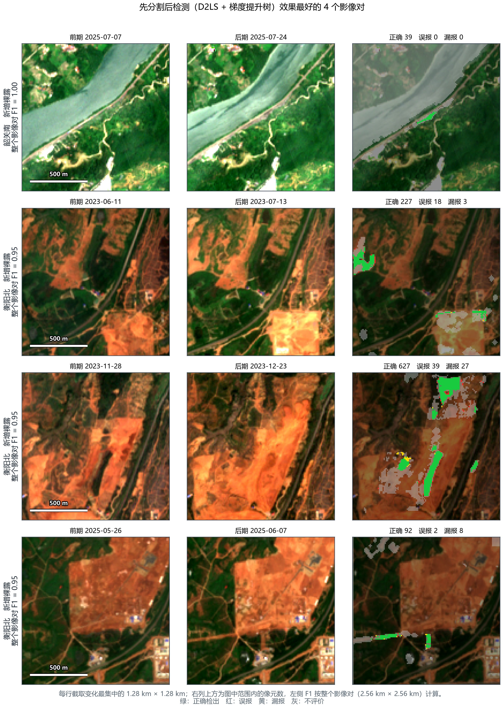
- 各测试期：前两折的 F1 为 0.857 和 0.787，第三折（2024 年 4 月以后，跨度两年多）降到 0.638，主要是召回率下降（0.527）。
- 变化类型：新增裸露和道路增加的召回率超过 0.8，是检测最好的两类；植被减少、水域增加和水域减少的召回率都低于 0.31。
- 测点：衡阳北最好（F1 0.804），株洲南最差（0.235）。株洲南测试期按类别转移口径只有 112 个变化像元，分散在十余个影像对中，每对不超过 33 个像元，几乎都是小片变化。
- 成像条件：有雾影像对的 F1 为 0.689，比无雾的影像对（0.771）低 0.082；河岸带内只有 0.341，是最困难的区域。
- 变化区域大小：超过 100 个像元的变化区域几乎全部检出，1—4 个像元的只检出 22%。
- 误报位置：60% 的误报落在后期为裸露的位置，其次是植被。
6 两条路线的比较与方法选择
两条路线的最终方法都用类别转移标签训练，用同一时间划分、按类别转移口径评价：直接检测为 OlmoEarth 网络（4.3 节），先分割后检测为 D2LS 分割 + 梯度提升树判别（5.3 节）。
表 17 两条路线最终方法的比较（类别转移口径）
| 指标 | 直接检测（OlmoEarth） | 先分割后检测（D2LS + 梯度提升树） |
|---|---|---|
| 三折平均 F1 | 0.674 | 0.761 |
| 精确率 | 0.715 | 0.805 |
| 召回率 | 0.672 | 0.750 |
| 变化类 IoU | 0.486 | 0.599 |
| 合并 F1 | 0.655 | 0.749 |
| 事件检出率 | 56.7% | 65.7% |
| 误报斑块占比 | 47.0% | 31.4% |
| F1：2023 年 4—7 月 | 0.764 | 0.857 |
| F1：2023 年 11 月—2024 年 3 月 | 0.685 | 0.787 |
| F1：2024 年 4 月以后 | 0.572 | 0.638 |
| F1：有雾影像对 | 0.563 | 0.689 |
| F1：无雾影像对 | 0.692 | 0.771 |
| F1：河岸带内 | 0.194 | 0.341 |
| F1：河岸带外 | 0.712 | 0.808 |
| 类内变化检出率 | 0.257 | 0.300 |
| 1—20 像元小斑块召回 | 0.380 | 0.417 |
注：先分割后检测减直接检测的三折平均 F1 差为 +0.087，差异不显著。
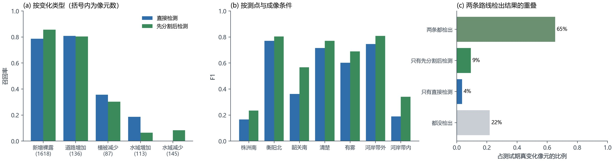
总体成绩。先分割后检测的三折平均 F1 为 0.761，直接检测为 0.674；精确率、召回率、变化类 IoU、合并 F1、事件检出率、误报斑块占比，先分割后检测都更好。两者的 F1 之差为 +0.087，差异不显著。如果直接检测改用全部变化标注训练（测试 F1 0.709，但它在验证集上较低，按 2.5 节的原则没有选用），两条路线之差为 +0.051，差异不显著。按类别转移口径，测试期只有 1,955 个变化像元，差值区间较宽，两条路线在总体 F1 上的高低还需要更多独立测试数据确认（8.5 节）。
各有所长。先分割后检测在新增裸露、水域减少和有雾影像上更好，误报少；直接检测在植被减少、水域增加上召回更高（图 15a、b）。从检出结果的重叠看（图 15c），65% 的真实变化两条路线都能检出，9% 只被先分割后检测检出，4% 只被直接检测检出，22% 两条路线都没有检出。
误报的位置不同。直接检测的误报中有 30% 落在水体上，先分割后检测只有 3%。直接检测容易把水位涨落和水色变化当成地表变化；先分割后检测的判别器参考了两期的地物类别，水体内部的光谱变化大多被判为没有变化，这可能是两者差别的主要原因。
换算成核查工作量。按测试期统计（三个测点共 300 个影像对，约 36 个月），先分割后检测共报出 57 处变化（不少于 4 个像元的斑块），其中 18 处与人工标注的变化不重叠；平均到每个测点，大约每两个月报出一处，误报大约每半年一处。直接检测相应为 64 处和 28 处。两条路线的报警量都很小，核查人员可以逐一查看。
方法选择。总体 F1 的差异不显著，本研究依据以下三点选用先分割后检测（D2LS 分割 + 梯度提升树判别）作为主方法：
- 误报更少、更稳定：误报斑块占比 31.4%（直接检测 47.0%）；从无雾到有雾，F1 只下降 0.082（直接检测下降 0.129）；对核查人员来说，误报少意味着现场核查的工作量小；
- 结果可以解释：每一步都有明确的含义，检出的变化可以说明“从什么地物变成了什么地物”，方便核查人员理解和复核；
- 更新成本低：分割模型训练好后可以重复使用，判别器在普通计算机上几分钟就能重新训练，有了新的标注可以随时更新。
直接检测作为对照路线保留，两条路线的互补是下一步改进的方向（第 8 章）。
7 河岸线研究
河岸变化是铁路沿线的另一类风险。本研究用 10 米影像的长时间序列，研究了两个临河测点的水域范围和水边线变化。
方法。对株洲南和韶关南，用全部无云影像逐期提取水体（按水体指数 MNDWI 设门槛），统计每个像元多年来被水覆盖的频率；分别提取多年夏季（6—9 月）和冬季（12—2 月）的中位水边线；在铁路一侧每隔约 100 米布设一条垂直于河岸的断面（株洲南 31 条、韶关南 26 条），量测水边线到铁路的距离，以及它的季节差和年际差。
结果。季节差和年际差的中位数绝对值都小于 2 米，而同一断面单景影像提取的水边线本身的摆动，中位数就达到 5.7 米（株洲南）和 6.4 米（韶关南）。也就是说，多年的变化比单景观测本身的波动还小（图 16、图 17）。韶关南部分断面出现超过 5 米的季节或年际变化，位置与冬季陡坡阴影重合。韶关南 26 条临河断面中，有 18 条的水边线离铁路不到 50 米。
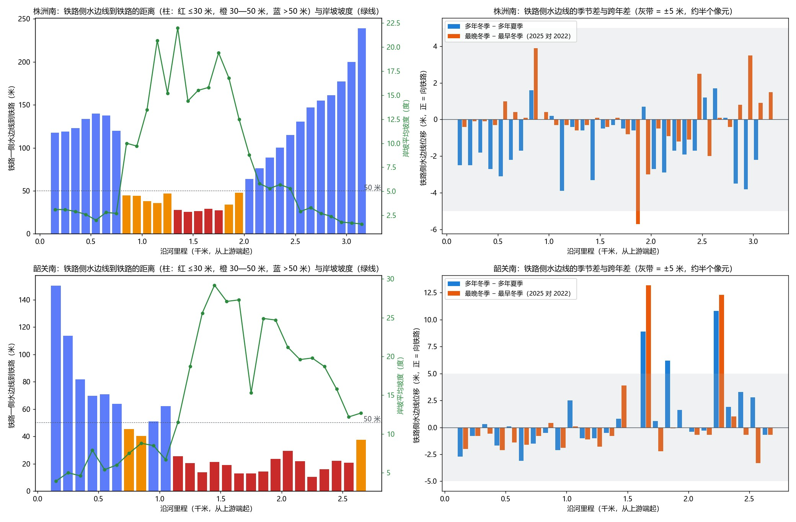
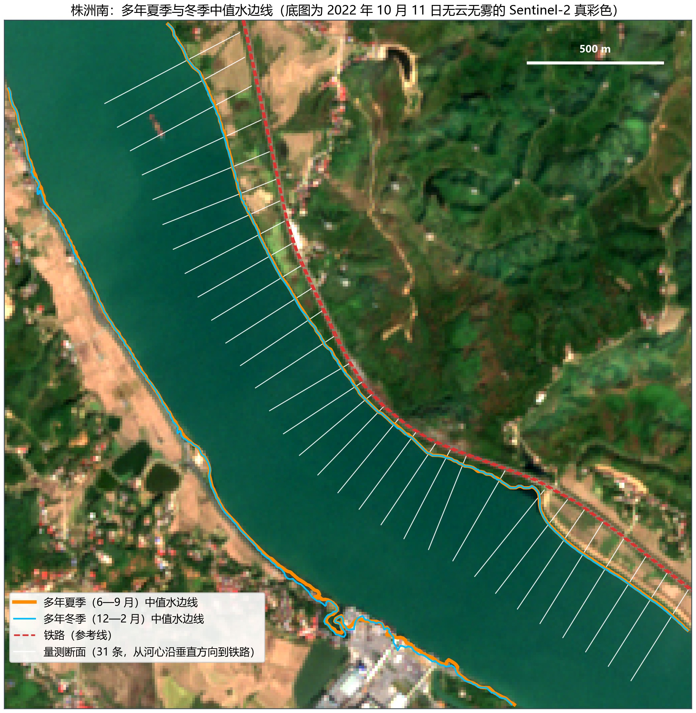
变化检测在河岸带的表现。第 4、5 章的变化检测中，河岸带（距水陆分界 3 个像元以内）的精度明显低于其他区域（见表 10和表 16中的“河岸带内”一行）。河岸带内的变化信号混合了水位涨落、水边混合像元、水色变化和阴影，10 米影像很难把它们分开。
结论与安排。10 米影像适合做河岸的历史筛查：哪些河段离铁路近、是不是陡岸、多年水域范围有没有明显推进。米级的岸线位移，需要与 Sentinel-2 同一天或相差 48 小时以内的亚米级影像，并结合同期水位资料。下一步针对株洲南 2024 年 10 月 3 日、2023 年 1 月 7 日和韶关南 2024 年 11 月 29 日、2022 年 10 月 26 日四个有代表性的水面状态，查找时间相近的高分辨率影像和水位记录，给出每条断面的定位误差和变化量。
8 当前存在的问题与改进方向
根据第 4—6 章的结果，当前方法的问题集中在以下五个方面。每个问题都给出表现、原因和改进实验。
8.1 长期预测时召回率下降
表现。两条路线在第三折（2024 年 4 月以后）的 F1 都明显低于前两折：先分割后检测主要是召回率下降（第三折召回率 0.527），直接检测的精确率和召回率都下降。
原因。第三折的测试期长达两年多，地表状况、施工类型和成像条件与训练期差别较大；变化的构成也不同：第三折测试期中类别转移变化只占标注变化的 21%，前两折为 32%—38%（表 4）。此外，判别器只看前后两期影像，缺少“这里过去是什么样”的长期背景。
改进实验。把前期之前的多期影像作为时间背景输入。已做的两项对照中，先分割后检测加入前期之前 2 期的证据，差值为 −0.002，差异不显著；直接检测把前 2 期影像和真实日期一起输入编码器，差值为多少还要等训练完成。把历史影像直接加进输入，目前还没有看到增益，下一步要让模型明确比较“前期相对历史是否已经异常”。判断标准为第三折 F1 提高、前两折不下降。
8.2 类内变化和非裸土类变化检出不足
表现。按类别转移口径计算，先分割后检测对植被减少、水域增加和水域减少的召回率都低于 0.31；地物类别没有改变的类内变化只检出约 30%。
原因。先分割后检测靠“类别改变”和“光谱突变”两条规则选候选像元。林地疏伐后仍是林地、水位涨落后仍是水体，这类变化光谱差异小，容易落在候选之外，或被判别器否定。直接检测在这几类上同样不高（植被减少 0.356、水域增加 0.186、水域减少 0.000）。
改进实验。（1）把直接检测网络输出的变化概率作为判别器的一项特征，让两条路线互补，仍由一个判别器输出最终结果（训练期的直接检测概率同样要用交叉拟合得到）；（2）为植被减少和水域变化设计专门的候选规则（例如近红外明显下降、水体指数越过门槛）。判断标准为这几类的召回率提高、总体精确率不下降。
8.3 小目标漏检
表现。先分割后检测对 1—4 个像元的变化区域召回率只有 0.216，5—20 个像元的为 0.527，而超过 100 个像元的几乎全部检出。
原因。在 10 米像元下，施工便道和小片清表只有 1—3 个像元宽，像元内往往混有两种地物，光谱介于两者之间；3 × 3 平滑和候选规则也会削弱孤立的小区域。
改进实验。（1）用高分辨率影像核实小片变化的标注本身是否准确（9.1 节）；（2）训练时提高小片变化样本的权重，并对小区域取消平滑。判断标准为 1—20 个像元变化区域的召回率提高，误报斑块占比不上升。
8.4 有雾和河岸等困难条件
表现。直接检测在有雾影像对上的 F1 明显下降；河岸带内的 F1，直接检测只有 0.194，先分割后检测为 0.341。
原因。薄雾不会被云掩膜识别出来，但会抬高可见光反射率；河岸带的水位涨落、水边混合像元和水色变化，在 10 米分辨率下难以与真实变化区分。
改进实验。（1）训练时给单期影像人为加上薄雾（合成雾增强），让网络学会“雾造成的差别不是地表变化”；（2）只在有雾的影像对上引入不受雾影响的雷达数据，检验它能否减少有雾时的误报；（3）河岸带单独评价、单独设门槛，河岸位移改用高分辨率影像量测（第 7 章）。
8.5 评价数据规模有限
表现。按类别转移口径，三折测试期一共只有 1,955 个变化像元、67 个事件；同一路线内只改一个因素时，F1 相差 0.05 以下通常不显著；第二折的验证集只有 6 个影像对，验证集 F1（0.84—0.91）明显高于测试集，门槛的选择存在偏差。另外，目前只检验了按时间外推，还没有检验换到新测点的效果。
改进。（1）标注 2026 年 7 月以后的新影像，作为只在最后使用一次的独立测试集；（2）用高分辨率影像对一批影像对做独立判读，作为不依赖现有标注的精度评价（9.1 节）；（3）在新的测点上检验，判别器去掉测点编码；（4）利用公开数据：Dynamic World 的 Sentinel-2 专家地物标注 [50] 可用于扩充分割模型的训练，DynamicEarthNet 的逐月地物与变化标注 [51] 和 OSCD [16] 可用于检验方法在其他地区的表现。
9 后续安排
9.1 高分辨率影像核验
有三类问题需要亚米级影像回答：标注是否准确（窄条、小片、边缘的变化在 10 米上看不清）；误报是不是真的误报（部分“误报”其实是标注遗漏）；10 米检测的极限在哪里（新建建筑、林地小片）。每个待核实的变化都需要前后两期高分辨率影像：只有一期，只能说明现在是什么地物，说明不了是什么时候变的。
表 18 高分辨率影像采购方案（吉林一号存档影像，金额只在内部版提供）
| 批次 | 内容 | 期数 | 金额 | 用途 |
|---|---|---|---|---|
| 核心诊断首批 | 8 个代表性变化（成片检出、大量漏报、重点施工、河岸、有雾误报等），每个变化前后各需一期 | 16 个需求中 14 个有存档，对应 13 景；另有 2 个后期需求需要另查 | （只在内部版） | 核实标注、误报和漏报的性质 |
| 独立评价批 | 按测点、季节、成像质量和检测结果分层抽取 12—24 个影像对，用高分辨率影像独立判读 | 最多 48 景 | （只在内部版） | 不依赖现有标注的独立精度评价 |
| 历史覆盖批 | 三个测点 2021—2026 年各季节的存档 | 93 景（0.5 米 56 景、亚米级 37 景），覆盖 60 个“测点 × 季度”中的 53 个 | （只在内部版） | 各季节背景与案例回看 |
| 河岸同期批 | 四个代表性水面状态，要求与 Sentinel-2 同一天或相差 48 小时以内 | 4—8 景，需另行查询 | （只在内部版） | 米级岸线量测 |
到货验收时逐景核对：拍摄日期与时刻、原始分辨率、目标区内的云和阴影、几何精度和配准误差、侧视角度、是否真正覆盖了目标变化发生的时段、使用许可。建议先采购核心诊断首批。
9.2 台账事件研究
台账是铁路部门记录沿线隐患和施工事件的清单，记有事件的时间、地点和类型。我们对台账事件逐一看图，判断事件在 10 米影像上能否看到可归属于事件的痕迹；能看到的只是少数，水淹事件因为事件后很少有晴天影像，几乎都看不清。台账的条数和逐条判读结果属于铁路方资料，只在内部版提供。
因此台账研究分两个方向：
- 事件前后的变化检测：在 110 个可见窗口上运行本研究的方法，计算事件检出率；在同一线路、地形和观测条件相近的无事件窗口上计算误报率，作为方法的外部检验。
- 长期前兆线索：对事件点和匹配的对照点，比较事件发生之前多年的地表背景（坡度、汇水条件、植被变化趋势、裸土比例、历史水体频率）以及事件前 1—30 天的降雨，检验事件前的地表扰动能否在地点、季节和降雨之外提供额外的预警信息。所有变量的时间范围都严格截止于事件发生之前。
9.3 实验安排
表 19 下一阶段的实验安排
| 优先级 | 实验 | 针对的问题 | 判断标准 |
|---|---|---|---|
| 1 | 所有对照补足三次训练，确认 4.4.3 节、5.6.3 节中只训练一次的结果 | 结论的可靠性 | 差值区间不包含 0 才下结论 |
| 1 | 直接检测主方案去掉往年同期，在同一台计算机上训练三次 | 4.4.3 节：往年同期没有帮助 | 验证集和测试集 F1 都不低于现主方案 |
| 1 | 把直接检测网络的变化概率作为判别器的特征 | 8.2 水域、植被类漏检 | 这几类召回率提高，精确率不下降 |
| 2 | 多期时间背景（真实日期 + 前期之前的影像） | 8.1 长期预测 | 第三折 F1 提高 |
| 2 | 合成雾增强；河岸带单独设门槛 | 8.4 困难条件 | 有雾影像对的误报减少；河岸带 F1 提高 |
| 2 | 提高小片变化的样本权重，小区域不平滑 | 8.3 小目标 | 1—20 个像元变化区域的召回率提高 |
| 3 | 标注 2026 年 7 月以后的影像作为独立测试集；高分辨率独立判读 | 8.5 评价规模 | 在独立测试集上复现主要结论 |
| 3 | 用公开数据集扩充分割训练、做外部检验 | 8.5 评价规模 | 分割 mIoU 和外部数据上的检测成绩 |
10 结论
- 方法选择：在三个测点、按时间外推的评价中，先分割后检测（D2LS 分割 + 梯度提升树判别）三折平均 F1 为 0.761（精确率 0.805、召回率 0.750），OlmoEarth 直接检测为 0.674，总体 F1 的差异不显著；先分割后检测误报更少、在有雾条件下更稳定、结果可以解释，作为主方法。
- 直接比较两期分类结果不可行：变化像元只占 0.018%，两期分类直接比较的精确率不到 1%；“候选像元 + 判别器”把误报减少了两个数量级以上。
- 分割更准不等于检测更好：23 种分割模型的分割精度与检测成绩几乎无关（相关系数 0.14）；判别真伪主要依靠光谱证据。
- 多光谱必要，近红外是关键：两条路线中，只用 RGB 或去掉近红外都会明显降低成绩；红边、短波红外和 60 米大气波段的作用很小。
- 辅助数据目前没有可以确认的增益：往年同期、地形、前后包夹并校正错位的雷达、逐期光照和成像质量，在两条路线上都没有带来显著的提高；地形被换掉后成绩不降，说明模型没有利用它的物理含义；直接检测主要使用由两期影像算出的光谱指数差。辅助数据需要针对具体问题设计使用方式。
- 主要问题：长期预测时召回率下降、类内变化和水域变化检出不足、小目标漏检、有雾和河岸条件困难、独立测试数据不足。下一阶段按 9.3 节的安排逐项改进，并用高分辨率影像独立核验。
参考文献
[1] MALILA W A. Change vector analysis: an approach for detecting forest changes with Landsat[C]//Proceedings of the Symposium on Machine Processing of Remotely Sensed Data. West Lafayette: Purdue University, 1980: 326-335.
[2] SINGH A. Digital change detection techniques using remotely-sensed data[J]. International Journal of Remote Sensing, 1989, 10(6): 989-1003.
[3] NIELSEN A A. The regularized iteratively reweighted MAD method for change detection in multi- and hyperspectral data[J]. IEEE Transactions on Image Processing, 2007, 16(2): 463-478.
[4] DAUDT R C, LE SAUX B, BOULCH A. Fully convolutional siamese networks for change detection[C]//2018 25th IEEE International Conference on Image Processing (ICIP). 2018: 4063-4067.
[5] FANG S, LI K, SHAO J, et al. SNUNet-CD: a densely connected siamese network for change detection of VHR images[J]. IEEE Geoscience and Remote Sensing Letters, 2022, 19: 8007805.
[6] CHEN H, QI Z, SHI Z. Remote sensing image change detection with transformers[J]. IEEE Transactions on Geoscience and Remote Sensing, 2022, 60: 5607514.
[7] BANDARA W G C, PATEL V M. A transformer-based siamese network for change detection[C]//IGARSS 2022 IEEE International Geoscience and Remote Sensing Symposium. 2022: 207-210.
[8] FANG S, LI K, LI Z. Changer: feature interaction is what you need for change detection[J]. IEEE Transactions on Geoscience and Remote Sensing, 2023, 61: 5610111.
[9] CHEN H, SONG J, HAN C, et al. ChangeMamba: remote sensing change detection with spatiotemporal state space model[J]. IEEE Transactions on Geoscience and Remote Sensing, 2024, 62: 4409720.
[10] SZWARCMAN D, ROY S, FRACCARO P, et al. Prithvi-EO-2.0: a versatile multi-temporal foundation model for Earth observation applications[EB/OL]. arXiv:2412.02732, 2024.
[11] JAKUBIK J, YANG F, BLUMENSTIEL B, et al. TerraMind: large-scale generative multimodality for Earth observation[C]//Proceedings of the IEEE/CVF International Conference on Computer Vision (ICCV). 2025.
[12] Allen Institute for AI. OlmoEarth: open foundation models for Earth observation[EB/OL]. 2025. https://allenai.org/olmoearth.
[13] SIMÉONI O, VO H V, SEITZER M, et al. DINOv3[EB/OL]. arXiv:2508.10104, 2025.
[14] RAVI N, GABEUR V, HU Y T, et al. SAM 2: segment anything in images and videos[C]//International Conference on Learning Representations (ICLR). 2025.
[15] PeftCD: leveraging vision foundation models with parameter-efficient fine-tuning for remote sensing change detection[EB/OL]. arXiv, 2025.
[16] DAUDT R C, LE SAUX B, BOULCH A, et al. Urban change detection for multispectral earth observation using convolutional neural networks[C]//IGARSS 2018 IEEE International Geoscience and Remote Sensing Symposium. 2018: 2115-2118.
[17] CORLEY I, ROBINSON C, ORTIZ A. A change detection reality check[EB/OL]. ICLR 2024 Workshop on Machine Learning for Remote Sensing. arXiv:2402.06994, 2024.
[18] HU E J, SHEN Y, WALLIS P, et al. LoRA: low-rank adaptation of large language models[C]//International Conference on Learning Representations (ICLR). 2022.
[19] ZHU D, et al. ChangeViT: unleashing plain vision transformers for change detection[J]. Pattern Recognition, 2026. DOI: 10.1016/j.patcog.2025.112539.
[20] MILLETARI F, NAVAB N, AHMADI S A. V-Net: fully convolutional neural networks for volumetric medical image segmentation[C]//2016 Fourth International Conference on 3D Vision (3DV). 2016: 565-571.
[21] TOWNSHEND J R G, JUSTICE C O, GURNEY C, et al. The impact of misregistration on change detection[J]. IEEE Transactions on Geoscience and Remote Sensing, 1992, 30(5): 1054-1060.
[22] DAI X, KHORRAM S. The effects of image misregistration on the accuracy of remotely sensed change detection[J]. IEEE Transactions on Geoscience and Remote Sensing, 1998, 36(5): 1566-1577.
[23] TUCKER C J. Red and photographic infrared linear combinations for monitoring vegetation[J]. Remote Sensing of Environment, 1979, 8(2): 127-150.
[24] MCFEETERS S K. The use of the normalized difference water index (NDWI) in the delineation of open water features[J]. International Journal of Remote Sensing, 1996, 17(7): 1425-1432.
[25] XU H. Modification of normalised difference water index (NDWI) to enhance open water features in remotely sensed imagery[J]. International Journal of Remote Sensing, 2006, 27(14): 3025-3033.
[26] RIKIMARU A, ROY P S, MIYATAKE S. Tropical forest cover density mapping[J]. Tropical Ecology, 2002, 43(1): 39-47.
[27] European Space Agency. Copernicus DEM: global and European digital elevation model (COP-DEM GLO-30)[EB/OL]. 2021. https://doi.org/10.5270/ESA-c5d3d65.
[28] PONTIUS R G, MILLONES M. Death to Kappa: birth of quantity disagreement and allocation disagreement for accuracy assessment[J]. International Journal of Remote Sensing, 2011, 32(15): 4407-4429.
[29] FOODY G M. Explaining the unsuitability of the kappa coefficient in the assessment and comparison of the accuracy of thematic maps obtained by image classification[J]. Remote Sensing of Environment, 2020, 239: 111630.
[30] JENSEN J R. Introductory digital image processing: a remote sensing perspective[M]. 4th ed. Glenview: Pearson, 2015.
[31] COPPIN P, JONCKHEERE I, NACKAERTS K, et al. Digital change detection methods in ecosystem monitoring: a review[J]. International Journal of Remote Sensing, 2004, 25(9): 1565-1596.
[32] DAUDT R C, LE SAUX B, BOULCH A, et al. Multitask learning for large-scale semantic change detection[J]. Computer Vision and Image Understanding, 2019, 187: 102783.
[33] YANG K, XIA G S, LIU Z, et al. Asymmetric siamese networks for semantic change detection in aerial images[J]. IEEE Transactions on Geoscience and Remote Sensing, 2022, 60: 5609818.
[34] DING L, GUO H, LIU S, et al. Bi-temporal semantic reasoning for the semantic change detection in HR remote sensing images[J]. IEEE Transactions on Geoscience and Remote Sensing, 2022, 60: 5620014.
[35] ZOU X, et al. Dynamic dictionary learning for remote sensing image segmentation[C]//Proceedings of the IEEE/CVF International Conference on Computer Vision (ICCV). 2025. arXiv:2503.06683.
[36] LIU Z, MAO H, WU C Y, et al. A ConvNet for the 2020s[C]//Proceedings of the IEEE/CVF Conference on Computer Vision and Pattern Recognition (CVPR). 2022: 11976-11986.
[37] FRIEDMAN J H. Greedy function approximation: a gradient boosting machine[J]. The Annals of Statistics, 2001, 29(5): 1189-1232.
[38] GRINSZTAJN L, OYALLON E, VAROQUAUX G. Why do tree-based models still outperform deep learning on typical tabular data?[C]//Advances in Neural Information Processing Systems (NeurIPS) Datasets and Benchmarks Track. 2022.
[39] RONNEBERGER O, FISCHER P, BROX T. U-Net: convolutional networks for biomedical image segmentation[C]//Medical Image Computing and Computer-Assisted Intervention (MICCAI). 2015: 234-241.
[40] LI K, CAO X, MENG D. A new learning paradigm for foundation model-based remote-sensing change detection[J]. IEEE Transactions on Geoscience and Remote Sensing, 2024, 62: 5610112.
[41] LIU Z, HU H, LIN Y, et al. Swin Transformer V2: scaling up capacity and resolution[C]//Proceedings of the IEEE/CVF Conference on Computer Vision and Pattern Recognition (CVPR). 2022: 12009-12019.
[42] FU Y, et al. SegMAN: omni-scale context modeling with state space models and local attention for semantic segmentation[C]//Proceedings of the IEEE/CVF Conference on Computer Vision and Pattern Recognition (CVPR). 2025.
[43] XIONG Z, WANG Y, ZHANG F, et al. Neural plasticity-inspired multimodal foundation model for Earth observation[EB/OL]. arXiv:2403.15356, 2024.
[44] BASTANI F, WOLTERS P, GUPTA R, et al. SatlasPretrain: a large-scale dataset for remote sensing image understanding[C]//Proceedings of the IEEE/CVF International Conference on Computer Vision (ICCV). 2023: 16772-16782.
[45] WANG Y, BRAHAM N A A, XIONG Z, et al. SSL4EO-S12: a large-scale multimodal, multitemporal dataset for self-supervised learning in Earth observation[J]. IEEE Geoscience and Remote Sensing Magazine, 2023, 11(3): 98-106.
[46] WANG Y, ALBRECHT C M, ZHU X X. Multilabel-guided soft contrastive learning for efficient Earth observation pretraining[EB/OL]. arXiv:2405.20462, 2024.
[47] Meta AI. SAM 3: segment anything with concepts[EB/OL]. 2025. https://ai.meta.com/sam3.
[48] XIE E, WANG W, YU Z, et al. SegFormer: simple and efficient design for semantic segmentation with transformers[C]//Advances in Neural Information Processing Systems (NeurIPS). 2021: 12077-12090.
[49] ZHOU Z, SIDDIQUEE M M R, TAJBAKHSH N, et al. UNet++: a nested U-Net architecture for medical image segmentation[C]//Deep Learning in Medical Image Analysis and Multimodal Learning for Clinical Decision Support. 2018: 3-11.
[50] BROWN C F, BRUMBY S P, GUZDER-WILLIAMS B, et al. Dynamic World, near real-time global 10 m land use land cover mapping[J]. Scientific Data, 2022, 9: 251.
[51] TOKER A, KONDMANN L, WEBER M, et al. DynamicEarthNet: daily multi-spectral satellite dataset for semantic change segmentation[C]//Proceedings of the IEEE/CVF Conference on Computer Vision and Pattern Recognition (CVPR). 2022: 21158-21167.